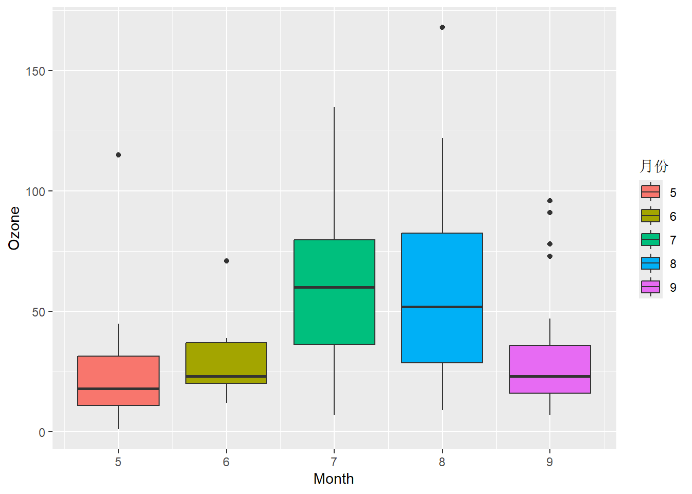
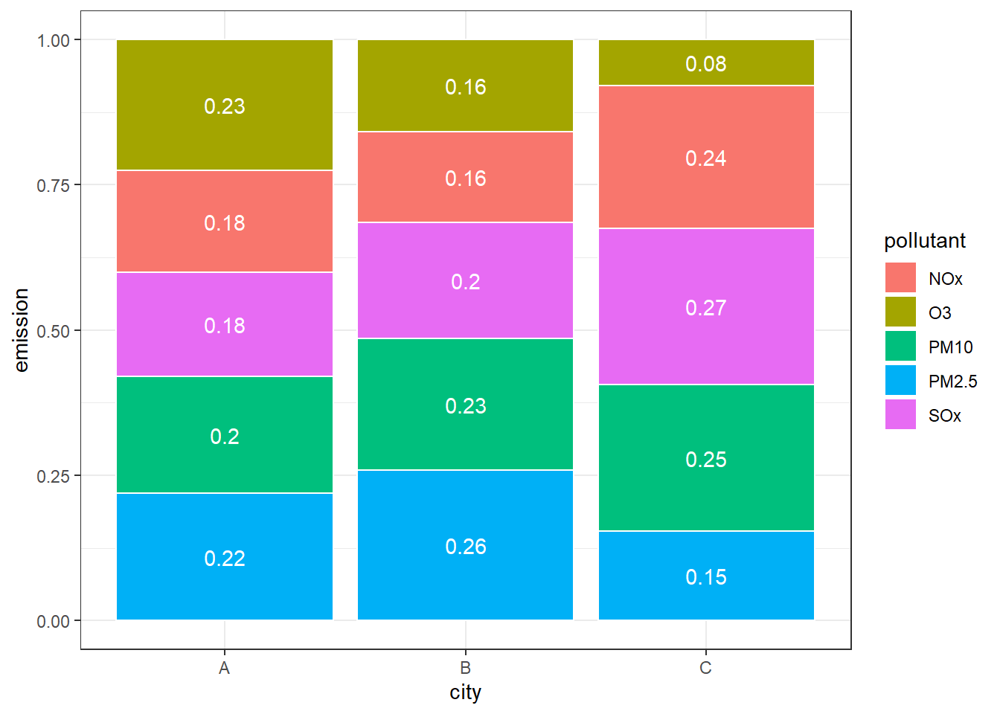
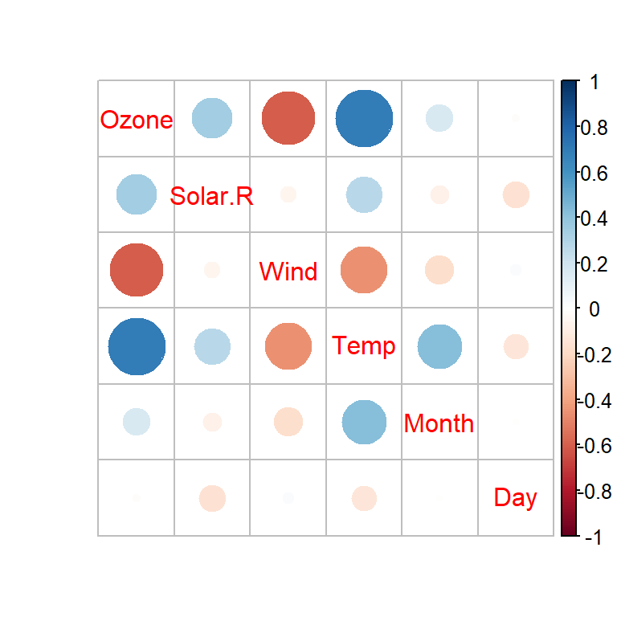

library(tidyr)
set.seed(2023)
pm10 = tibble(ID = 1:6,
spring = round(rnorm(6, 50, 10) * 10),
summer = round(rnorm(6, 25, 5) * 10),
autumn = round(rnorm(6, 45, 10) * 10),
winter = round(rnorm(6, 75, 20) * 10))3 环境数据整理与可视化
在环境数据收集以后，需要对其进行整理或清理，特别是要对其中的缺失值、异常值、错误和重复数据等进行检查，并采取相应的处理措施，以保障数据的质量。数据质量存在问题，则后续分析和建模的结果将不再可靠。此外，一些分析和建模方法对缺失值、异常值敏感，如果不进行处理，将会影响分析和建模的结果，甚至不能分析和建模。
原始数据以及整理和分析后的数据往往需要通过表特别是图进行可视化，从而直观生动地展现数据内在的信息。用不同类型的图形展示数据中不同变量之间的关系，有利于对数据的直观理解，并为分析和建模提供必要信息。特别是高维大数据，噪声和冗余信息过多，不仅增加分析和建模的时间和算力成本，也会影响结果的准确性和可靠性。
本章将学习利用tidyr和dplyr工具包对数据进行整理，并利用ggplot2与其扩展工具包实现数据的可视化。
3.1 环境数据整理
3.1.1 tidyr工具包主要函数
tidyr工具包的主要功能是清洗数据集，确保每一列对应一个变量(特征或属性)，每一行对应一个观测(样例或数据点)，每一个单元格对应一个值或元素，即形成整洁(tidy)的数据表。
3.1.1.1 长宽表转换
pivot_longer()函数的作用在于将分散在不同列的同一个变量的值合并为一列。
例 3.1 如 表 3.1 所示的数据表(随机生成的伪数据)，是最常见的非tidy数据表，因为PM10的浓度数据分散在四个列变量中。为此，需要将四个列变量转换为一列名为Season的字符变量，将所有的数值转换为一列为PM10的数值变量，这样清理以后的数据表才是整洁数据表，如 表 3.2 所示。
| ID | spring | summer | autumn | winter |
|---|---|---|---|---|
| 1 | 492 | 204 | 506 | 929 |
| 2 | 402 | 300 | 516 | 864 |
| 3 | 312 | 230 | 390 | 668 |
| 4 | 481 | 227 | 520 | 691 |
| 5 | 437 | 266 | 510 | 994 |
| 6 | 609 | 229 | 495 | 799 |
利用pivot_long()函数将宽表转换为tidy格式的长表：
pm10_long = pivot_longer(pm10, 2:5,
names_to = "Season",
values_to = "PM10")| ID | Season | PM10 |
|---|---|---|
| 1 | spring | 492 |
| 1 | summer | 204 |
| 1 | autumn | 506 |
| 1 | winter | 929 |
| 2 | spring | 402 |
| 2 | summer | 300 |
| 2 | autumn | 516 |
| 2 | winter | 864 |
| 3 | spring | 312 |
| 3 | summer | 230 |
| 3 | autumn | 390 |
| 3 | winter | 668 |
| 4 | spring | 481 |
| 4 | summer | 227 |
| 4 | autumn | 520 |
| 4 | winter | 691 |
| 5 | spring | 437 |
| 5 | summer | 266 |
| 5 | autumn | 510 |
| 5 | winter | 994 |
| 6 | spring | 609 |
| 6 | summer | 229 |
| 6 | autumn | 495 |
| 6 | winter | 799 |
pivot_wider()函数与pivot_longer()函数功能相反，是将长数据表转换为宽数据表。 以下代码将pm10_long转换为宽表pm10_wide，结果与 表 3.1 完全一致：
pm10_wide = pivot_wider(pm10_long,
id_cols = ID,
names_from = "Season",
values_from = "PM10") 3.1.1.2 列值合并与分割
对于 表 3.3 (a) 所示的数据表中century和year两列，可以通过unite()函数将其合并为一列，合并后的结果如 表 3.3 (b) 所示。
tb = tibble(country = LETTERS[1:4],
century = rep(c("19", "20"), 2),
year = rep(c("99", "00"), 2))
tb1 = unite(tb, "year", 2:3, sep = "")| country | century | year |
|---|---|---|
| A | 19 | 99 |
| B | 20 | 00 |
| C | 19 | 99 |
| D | 20 | 00 |
| country | year |
|---|---|
| A | 1999 |
| B | 2000 |
| C | 1999 |
| D | 2000 |
separate_wider_*()函数(*为dilim、position或regex)能够将一列中的字符分割为多列。如 表 3.4 (a) 所示的数据表中，如果需要将x列的数据从下划线处分割：
tb = tibble(id = 1:4, x = c("o3_1h", "o3_8h", "co_1h", "co_8h"))
# 以下三个函数操作结果相同
tb1 = tb %>% separate_wider_delim(x, delim = "_", names = c("pollutant", "hour"))
# tb1 = tb %>% separate_wider_position(x, c("pollutant" = 2, 1, "hour" = 2))
# tb1 = tb %>% separate_wider_regex(x, c("pollutant" = ".*", "_", "hour" = ".*"))分割后的数据表见 表 3.4 (b) 。
| id | x |
|---|---|
| 1 | o3_1h |
| 2 | o3_8h |
| 3 | co_1h |
| 4 | co_8h |
| id | pollutant | hour |
|---|---|---|
| 1 | o3 | 1h |
| 2 | o3 | 8h |
| 3 | co | 1h |
| 4 | co | 8h |
如果将x变量中的“co_8h”改为“co_24h”，separate_wider_position()函数就会报错，因为该值的宽度与前面三个值的宽度不同。separate_wider_regex()可以应对更复杂的字符串分割问题，但需要用户掌握正则表达式的语法。学习正则表达式可参阅菜鸟教程网站正则表达式教程。
当数据集中的列值需要分割为多行而不是多列时，可以利用函数separate_longer_dilim()和separate_longer_position()。如 表 3.5 所示的两个数据表，变量x的值需要分割为多行。
tb1 = tibble(id = 1:4, x = c("x", "x y", "x y z", NA))
tb2 = tibble(id = 1:4, x = c("ab", "def", "bf",""))| id | x |
|---|---|
| 1 | x |
| 2 | x y |
| 3 | x y z |
| 4 | NA |
| id | x |
|---|---|
| 1 | ab |
| 2 | def |
| 3 | bf |
| 4 |
分别利用separate_longer_delim()和separate_longer_position()对 表 3.5 中的两个表进行分割，结果如 表 3.6 所示。
| id | x |
|---|---|
| 1 | x |
| 2 | x |
| 2 | y |
| 3 | x |
| 3 | y |
| 3 | z |
| 4 | NA |
| id | x |
|---|---|
| 1 | a |
| 1 | b |
| 2 | d |
| 2 | e |
| 2 | f |
| 3 | b |
| 3 | f |
| 4 | NA |
3.1.1.3 其他操作
expand()函数可以根据数据表提供的变量生成所有可能的组合。如表 表 3.7 (a)所示的数据表，并没有显示所有因子与水平的组合。利用expand()进行处理后，结果见 表 3.7 (b)所示。
| trt | lvl |
|---|---|
| A | 1 |
| A | 2 |
| B | 1 |
| C | 2 |
| trt | lvl |
|---|---|
| A | 1 |
| A | 2 |
| B | 1 |
| B | 2 |
| C | 1 |
| C | 2 |
tb# A tibble: 4 × 2
trt lvl
<chr> <dbl>
1 A 1
2 A 2
3 B 1
4 C 2complete()函数将隐式的缺失值显式化。如 表 3.8 (a) 所示的数据表，存在隐式的缺失值。通过complete()可以将其显式地呈现出来，结果如 表 3.8 (b) 所示。
| grp | sam_id | sam_name | conc |
|---|---|---|---|
| 1 | 1 | A | 5 |
| 2 | 2 | A | NA |
| 1 | 2 | B | 8 |
| 2 | 3 | B | 10 |
| grp | sam_id | sam_name | conc |
|---|---|---|---|
| 1 | 1 | A | 5 |
| 1 | 2 | B | 8 |
| 1 | 3 | NA | NA |
| 2 | 1 | NA | NA |
| 2 | 2 | A | NA |
| 2 | 3 | B | 10 |
drop_na()函数提供了最简单的处理缺失值的方式：删除包含缺失值的行。而fill()函数则提供了利用前值和/或后值填补缺失值的方法。以下代码分别利用drop_na()和fill()删除和填补airquality数据集中的NA值：
# 删除NA值前
airquality[, 1:2] %>%
summary() Ozone Solar.R
Min. : 1.00 Min. : 7.0
1st Qu.: 18.00 1st Qu.:115.8
Median : 31.50 Median :205.0
Mean : 42.13 Mean :185.9
3rd Qu.: 63.25 3rd Qu.:258.8
Max. :168.00 Max. :334.0
NA's :37 NA's :7 # 删除NA值
airquality[, 1:2] %>%
drop_na(Ozone, Solar.R) %>%
summary() Ozone Solar.R
Min. : 1.0 Min. : 7.0
1st Qu.: 18.0 1st Qu.:113.5
Median : 31.0 Median :207.0
Mean : 42.1 Mean :184.8
3rd Qu.: 62.0 3rd Qu.:255.5
Max. :168.0 Max. :334.0 # 填补NA值
airquality[, 1:2] %>%
fill(Ozone, Solar.R, .direction = "up") %>%
summary() Ozone Solar.R
Min. : 1.0 Min. : 7.0
1st Qu.: 20.0 1st Qu.:118.0
Median : 31.0 Median :213.0
Mean : 46.8 Mean :188.1
3rd Qu.: 71.0 3rd Qu.:259.0
Max. :168.0 Max. :334.0 R用NA表示缺失值，但其他数据处理软件可能采用不同的缺失值符号，replace_na()函数提供了修改缺失值符号的功能。下面的代码将airquality数据集中Ozone的缺失值修改为-99999。在修改缺失值符号时需要注意变量的数据类型。
airquality %>%
replace_na(list(Ozone = -99999)) %>%
summary() Ozone Solar.R Wind Temp
Min. :-99999 Min. : 7.0 Min. : 1.700 Min. :56.00
1st Qu.: 4 1st Qu.:115.8 1st Qu.: 7.400 1st Qu.:72.00
Median : 21 Median :205.0 Median : 9.700 Median :79.00
Mean :-24151 Mean :185.9 Mean : 9.958 Mean :77.88
3rd Qu.: 46 3rd Qu.:258.8 3rd Qu.:11.500 3rd Qu.:85.00
Max. : 168 Max. :334.0 Max. :20.700 Max. :97.00
NA's :7
Month Day
Min. :5.000 Min. : 1.0
1st Qu.:6.000 1st Qu.: 8.0
Median :7.000 Median :16.0
Mean :6.993 Mean :15.8
3rd Qu.:8.000 3rd Qu.:23.0
Max. :9.000 Max. :31.0
3.1.2 dplyr工具包主要函数
dplyr为数据框类型数据的整理提供了统一且高效的操作函数，提供了包括行列选择、行列合并、排序、列操作(创建、修改和删除)、分组汇总统计等。
3.1.2.1 选择列
select()函数可以根据位置、列名和条件选择等多种方式从数据中选择列。下面的代码演示select()函数对airquality数据集进行列选择：
library(dplyr)
# 按列位置选择列
airquality %>%
dplyr::select(1:3) %>%
head() Ozone Solar.R Wind
1 41 190 7.4
2 36 118 8.0
3 12 149 12.6
4 18 313 11.5
5 NA NA 14.3
6 28 NA 14.9# 按列位置选择列
airquality %>%
dplyr::select(1, 3:5) %>%
head() Ozone Wind Temp Month
1 41 7.4 67 5
2 36 8.0 72 5
3 12 12.6 74 5
4 18 11.5 62 5
5 NA 14.3 56 5
6 28 14.9 66 5# 按列位置列表选择列
airquality %>%
dplyr::select(c(1, 3, 5)) %>%
head() Ozone Wind Month
1 41 7.4 5
2 36 8.0 5
3 12 12.6 5
4 18 11.5 5
5 NA 14.3 5
6 28 14.9 5# 按列名范围选择列
airquality %>%
dplyr::select(Month, Day) %>%
head(5) Month Day
1 5 1
2 5 2
3 5 3
4 5 4
5 5 5# 按列名范围选择列
airquality %>%
dplyr::select(Temp:Day) %>%
head() Temp Month Day
1 67 5 1
2 72 5 2
3 74 5 3
4 62 5 4
5 56 5 5
6 66 5 6# 按列名列表范围选择列
airquality %>%
dplyr::select(c(Ozone, Temp, Month)) %>%
head() Ozone Temp Month
1 41 67 5
2 36 72 5
3 12 74 5
4 18 62 5
5 NA 56 5
6 28 66 5# 按列名包含字符选择列
airquality %>%
dplyr::select(contains("o")) %>%
head() Ozone Solar.R Month
1 41 190 5
2 36 118 5
3 12 149 5
4 18 313 5
5 NA NA 5
6 28 NA 5tidyselect包提供以下功能函数，可以提高列选择操作的效率：
contains()、starts_with()、ends_with()函数: 通过指定列名包含字符、开始字符和结束字符的条件来选择列；matchs()函数: 通过匹配指定正则表达式的条件来选择列；num_range()函数: 通过指定范围来选择列，用于以字符前缀+数字序号的列名(如x1、x2、x3等)；all_of()和any_of()函数: 从指定的列名列表中选择列，前者会进行列名匹配检查(如果数据集中没有列表中的列名，会报错)，而后者不进行列名匹配检查；everything()函数: 指定所有的列；last_col()函数: 指定最后一列；where()函数: 根据函数返回的逻辑值来选择列。
3.1.2.2 行选择
slice()和filter()是两个最常用的行选择函数。下面的代码演示这两个函数对airquality数据集进行行选择：
airquality %>%
slice(1:5) # 按行位置选择行 Ozone Solar.R Wind Temp Month Day
1 41 190 7.4 67 5 1
2 36 118 8.0 72 5 2
3 12 149 12.6 74 5 3
4 18 313 11.5 62 5 4
5 NA NA 14.3 56 5 5airquality %>%
slice(1, 3, 5, 10) # 按行位置选择行 Ozone Solar.R Wind Temp Month Day
1 41 190 7.4 67 5 1
2 12 149 12.6 74 5 3
3 NA NA 14.3 56 5 5
4 NA 194 8.6 69 5 10airquality %>%
dplyr::filter(Month == 7, Day %in% c(1:5)) # 按指定条件选择行 Ozone Solar.R Wind Temp Month Day
1 135 269 4.1 84 7 1
2 49 248 9.2 85 7 2
3 32 236 9.2 81 7 3
4 NA 101 10.9 84 7 4
5 64 175 4.6 83 7 5airquality %>%
dplyr::filter(Month > 7, Day <= 3) # 按指定条件选择行 Ozone Solar.R Wind Temp Month Day
1 39 83 6.9 81 8 1
2 9 24 13.8 81 8 2
3 16 77 7.4 82 8 3
4 96 167 6.9 91 9 1
5 78 197 5.1 92 9 2
6 73 183 2.8 93 9 3filter()函数中的条件表达式可充分运用关系运算符、逻辑运算符以及类似between()、is.na()、near()这样的条件判断函数等。
slice_head()和slice_tail()函数分别用于选择指定头部和尾部的行数，类似于Base-R中的head()和tail()两个函数，slice_min()和slice_max()函数分别选择指定列的最小值和最大值所在的行(通过参数n可指定根据最小值和最大值依次排序的行数)，slice_sample()函数用于随机抽取指定行数的行。
3.1.2.3 列操作
mutate()函数可创建新的列、修改现有的列(列名与已有列名相同)和删除指定的列(设置列值为NULL)。下面的代码演示mutate()对airqulity数据集进行各种列的操作：
airquality %>%
# 选择前20行
slice(1:10) %>%
# 根据Temp(华氏温度)计算摄氏温度并创建Temp_c
mutate(Temp_C = round((Temp - 32)/1.8, 2)) %>%
# 计算Ozone与Temp的比值并创建新列Ratio
mutate(Ratio = round(Ozone/Temp_C, 2)) %>%
# 创建新列ID
mutate(ID = 1:nrow(.)) %>%
# 将ID和Ratio列设置为第一和第二列
relocate(ID, Ratio, everything()) %>%
# 删除Temp列
mutate(Temp = NULL) %>%
# 修改现有列：将Month和Day列有序因子化
mutate(Month = ordered(Month),
Day = ordered(Day)) ID Ratio Ozone Solar.R Wind Month Day Temp_C
1 1 2.11 41 190 7.4 5 1 19.44
2 2 1.62 36 118 8.0 5 2 22.22
3 3 0.51 12 149 12.6 5 3 23.33
4 4 1.08 18 313 11.5 5 4 16.67
5 5 NA NA NA 14.3 5 5 13.33
6 6 1.48 28 NA 14.9 5 6 18.89
7 7 1.25 23 299 8.6 5 7 18.33
8 8 1.27 19 99 13.8 5 8 15.00
9 9 0.50 8 19 20.1 5 9 16.11
10 10 NA NA 194 8.6 5 10 20.56实际上，以上多个mutate()的操作可以合并为一个mutate()函数的操作，但是要注意操作的顺序，避免冲突，例如创建Temp_C列必须在创建Ratio列之前，删除Temp列必须在创建Temp_C列之后：
airquality %>%
slice(1:10) %>%
mutate(Temp_C = round((Temp - 32)/1.8, 2),
Ratio = round(Ozone/Temp_C, 2),
ID = 1:nrow(.),
Temp = NULL,
Month = ordered(Month),
Day = ordered(Day)) %>%
relocate(ID, Ratio, everything()) ID Ratio Ozone Solar.R Wind Month Day Temp_C
1 1 2.11 41 190 7.4 5 1 19.44
2 2 1.62 36 118 8.0 5 2 22.22
3 3 0.51 12 149 12.6 5 3 23.33
4 4 1.08 18 313 11.5 5 4 16.67
5 5 NA NA NA 14.3 5 5 13.33
6 6 1.48 28 NA 14.9 5 6 18.89
7 7 1.25 23 299 8.6 5 7 18.33
8 8 1.27 19 99 13.8 5 8 15.00
9 9 0.50 8 19 20.1 5 9 16.11
10 10 NA NA 194 8.6 5 10 20.563.1.2.4 数据集拼接
inner_join()、left_join()、right_join()和full_join()等函数可以将两个数据按特定方式进行合并。下面的代码演示这四个函数对两个数据集的拼接操作：
set.seed(2023)
x = tibble(
ID = 1:5,
x1 = round(rnorm(5) * 10, 2),
x2 = x1^2 - 1,
trt = sample(letters[1:10], 5, replace = T)
)
set.seed(2023)
y = tibble(
ID = 1:8,
y1 = round(rnorm(8, 5, 1), 2),
trt = sample(letters[1:10], 8, replace = T)
)
# 内拼接
inner_join(x, y, by = "trt")# A tibble: 3 × 6
ID.x x1 x2 trt ID.y y1
<int> <dbl> <dbl> <chr> <int> <dbl>
1 4 -1.86 2.46 e 5 4.37
2 5 -6.33 39.1 h 1 4.92
3 5 -6.33 39.1 h 6 6.09# 左拼接
left_join(x, y, by = "trt")# A tibble: 6 × 6
ID.x x1 x2 trt ID.y y1
<int> <dbl> <dbl> <chr> <int> <dbl>
1 1 -0.84 -0.294 a NA NA
2 2 -9.83 95.6 a NA NA
3 3 -18.8 351. a NA NA
4 4 -1.86 2.46 e 5 4.37
5 5 -6.33 39.1 h 1 4.92
6 5 -6.33 39.1 h 6 6.09# 右拼接
right_join(x, y, by = "ID")# A tibble: 8 × 6
ID x1 x2 trt.x y1 trt.y
<int> <dbl> <dbl> <chr> <dbl> <chr>
1 1 -0.84 -0.294 a 4.92 h
2 2 -9.83 95.6 a 4.02 b
3 3 -18.8 351. a 3.12 c
4 4 -1.86 2.46 e 4.81 d
5 5 -6.33 39.1 h 4.37 e
6 6 NA NA <NA> 6.09 h
7 7 NA NA <NA> 4.09 i
8 8 NA NA <NA> 6 g # 全拼接
full_join(x, y)Joining with `by = join_by(ID, trt)`# A tibble: 13 × 5
ID x1 x2 trt y1
<int> <dbl> <dbl> <chr> <dbl>
1 1 -0.84 -0.294 a NA
2 2 -9.83 95.6 a NA
3 3 -18.8 351. a NA
4 4 -1.86 2.46 e NA
5 5 -6.33 39.1 h NA
6 1 NA NA h 4.92
7 2 NA NA b 4.02
8 3 NA NA c 3.12
9 4 NA NA d 4.81
10 5 NA NA e 4.37
11 6 NA NA h 6.09
12 7 NA NA i 4.09
13 8 NA NA g 6 semi_join()和anti_join()函数根据与第二个数据集匹配的列值来选择第一个数据集中的行，可以视为一种行选择操作。例如以下的操作：
semi_join(x, y, by = "trt") # 选择x中与y中trt列匹配的行# A tibble: 2 × 4
ID x1 x2 trt
<int> <dbl> <dbl> <chr>
1 4 -1.86 2.46 e
2 5 -6.33 39.1 h anti_join(x, y, by = "trt") # 选择x中与y中trt列不匹配的行# A tibble: 3 × 4
ID x1 x2 trt
<int> <dbl> <dbl> <chr>
1 1 -0.84 -0.294 a
2 2 -9.83 95.6 a
3 3 -18.8 351. a bind_cols()函数对多个等函数的数据集进行列合并，bind_rows()函数对多个数据集进行行合并。以下代码演示了这两个函数的操作：
df1 = tibble(x = 1:3, y = letters[2:4])
df2 = tibble(x = 1:3, z = 6:8)
bind_cols(df1, df2)New names:
• `x` -> `x...1`
• `x` -> `x...3`# A tibble: 3 × 4
x...1 y x...3 z
<int> <chr> <int> <int>
1 1 b 1 6
2 2 c 2 7
3 3 d 3 8bind_rows(df1, df2)# A tibble: 6 × 3
x y z
<int> <chr> <int>
1 1 b NA
2 2 c NA
3 3 d NA
4 1 <NA> 6
5 2 <NA> 7
6 3 <NA> 83.1.2.5 分组汇总统计
summarise()函数与group_by()协作可实现对一个或多个列变量执行分组汇总统计。以下代码根据Month变量分组，分别统计Ozone、Solar.R、Temp、Wind变量的月均值：
airquality %>%
group_by(Month) %>%
summarise(ozone_mean = mean(Ozone, na.rm = T),
Solar.R_mean = mean(Solar.R, na.rm = T),
Temp_mean = mean(Temp, na.rm = T),
Wind_mean = mean(Wind, na.rm = T))# A tibble: 5 × 5
Month ozone_mean Solar.R_mean Temp_mean Wind_mean
<int> <dbl> <dbl> <dbl> <dbl>
1 5 23.6 181. 65.5 11.6
2 6 29.4 190. 79.1 10.3
3 7 59.1 216. 83.9 8.94
4 8 60.0 172. 84.0 8.79
5 9 31.4 167. 76.9 10.2 如果采用across()函数，则更简洁：
airquality %>%
group_by(Month) %>%
summarise(
across(.cols = 1:4, # 用位置或列名选择列
.fns = mean, na.rm = T, # 函数或函数列表，可以加上函数的参数设置
.names = "{.col}_mean")) # 设置列名，{.col}表示引用原列名# A tibble: 5 × 5
Month Ozone_mean Solar.R_mean Wind_mean Temp_mean
<int> <dbl> <dbl> <dbl> <dbl>
1 5 23.6 181. 11.6 65.5
2 6 29.4 190. 10.3 79.1
3 7 59.1 216. 8.94 83.9
4 8 60.0 172. 8.79 84.0
5 9 31.4 167. 10.2 76.9across()函数还可以对选定的列应用多个函数：
fn = list(
mean = ~mean(.x, na.rm = T),
sd = ~sd(.x, na.rm = T))
airquality %>%
group_by(Month) %>%
summarise(
across(1:2, fn))# A tibble: 5 × 5
Month Ozone_mean Ozone_sd Solar.R_mean Solar.R_sd
<int> <dbl> <dbl> <dbl> <dbl>
1 5 23.6 22.2 181. 115.
2 6 29.4 18.2 190. 92.9
3 7 59.1 31.6 216. 80.6
4 8 60.0 39.7 172. 76.8
5 9 31.4 24.1 167. 79.1当应用多个函数时，结果列的名称默认为{.col}_{.fn}。函数列表中函数为匿名函数时采用purrr包中匿名函数的形式，即用~替代function(.x)，如果直接引用函数，则无需加~，直接引用函数名(不加后面的括号，如mean)：
fn = list(
mean = mean, # 不能是mean = mean()
sd = sd)
airquality %>%
group_by(Month) %>%
summarise(
across(.cols = 1:2,
.fns = fn, na.rm = T))# A tibble: 5 × 5
Month Ozone_mean Ozone_sd Solar.R_mean Solar.R_sd
<int> <dbl> <dbl> <dbl> <dbl>
1 5 23.6 22.2 181. 115.
2 6 29.4 18.2 190. 92.9
3 7 59.1 31.6 216. 80.6
4 8 60.0 39.7 172. 76.8
5 9 31.4 24.1 167. 79.1summarise()、mutate()与rowwise()协作可实现对行观测的分组汇总统计，前者只返回汇总统计结果，而后者默认返回原始数据与行观测统计结果合并的列(可以通过该函数中参数.keep来改变)。以下代码创建了一个5行×4列的数值变量，然后分别用summarise()和mutate()按行计算均值、标准差与加和：
matrix(1:20, nrow = 5) %>%
as_tibble() %>%
rowwise() %>%
summarise(mean = mean(c_across(1:4)),
sd = sd(c_across(1:4)),
sum = sum(c_across(1:4)))# A tibble: 5 × 3
mean sd sum
<dbl> <dbl> <int>
1 8.5 6.45 34
2 9.5 6.45 38
3 10.5 6.45 42
4 11.5 6.45 46
5 12.5 6.45 50matrix(1:20, nrow = 5) %>%
as_tibble() %>%
rowwise() %>%
mutate(mean = mean(c_across(1:4)),
sd = sd(c_across(1:4)),
sum = sum(c_across(1:4)))# A tibble: 5 × 7
# Rowwise:
V1 V2 V3 V4 mean sd sum
<int> <int> <int> <int> <dbl> <dbl> <int>
1 1 6 11 16 8.5 6.45 34
2 2 7 12 17 9.5 6.45 38
3 3 8 13 18 10.5 6.45 42
4 4 9 14 19 11.5 6.45 46
5 5 10 15 20 12.5 6.45 50上面代码中的c_across()函数用于配合rowwise()函数来选择列变量，是结合函数c()的扩展，遵循tidyr包的语法。
3.1.2.6 其他操作
arrange()函数可根据指定的一个或多个列对行进行升序排列，降序则需要使用desc()函数：
airquality %>%
arrange(Ozone, Month) %>% # 按Ozone和Month变量升序重新排序
head() Ozone Solar.R Wind Temp Month Day
1 1 8 9.7 59 5 21
2 4 25 9.7 61 5 23
3 6 78 18.4 57 5 18
4 7 NA 6.9 74 5 11
5 7 48 14.3 80 7 15
6 7 49 10.3 69 9 24airquality %>%
arrange(desc(Ozone), Month) %>% # 按Ozone变量降序和Month变量升序重新排序
head() Ozone Solar.R Wind Temp Month Day
1 168 238 3.4 81 8 25
2 135 269 4.1 84 7 1
3 122 255 4.0 89 8 7
4 118 225 2.3 94 8 29
5 115 223 5.7 79 5 30
6 110 207 8.0 90 8 9relocate()函数可调整列的位置：
airquality %>%
relocate(Month, Day, everything()) %>% # 将Month和Day列调整为第一列和第二列
head() Month Day Ozone Solar.R Wind Temp
1 5 1 41 190 7.4 67
2 5 2 36 118 8.0 72
3 5 3 12 149 12.6 74
4 5 4 18 313 11.5 62
5 5 5 NA NA 14.3 56
6 5 6 28 NA 14.9 663.1.3 错误和重复数据的处理
数据出现错误往往是在原始数据记录环节和计算机输入环节因人为原因导致，也有可能是测量阶段因方法错误、仪器故障等原因导致。对原始数据采用逻辑检查和计算检查，往往可以发现错误数据，如污染物浓度出现负数，用水总量低于新鲜用水量等，合计数据小于其分项数据，汇总的数据单位不一致等。发现错误数据后，应先溯源，看能否找到正确值，如不能找到正确值，应先以缺失值(NA)替代。要注意，一些分析仪器的检测结果可能因低于方法检测限(Method Detect Limit，MDL)而出现ND(Not Detect)数据，这不属于缺失值，也不是错误值，一般可以用0替代来进行处理。
以下代码演示了用0替代ND值、用NA替代负值的操作，处理前后的结果分别见表3.15和表3.16。
library(tidyverse)
df = tibble(id = c(1:8),
conc = c(2.3, 4.5, 1.4, 4.0, "ND", -2.3, "ND", 6.3))
# 有ND字符，强制为字符型数据
df1 = df %>%
mutate(across(2, ~replace(.x, .x == "ND", "0"))) %>%
mutate(across(2, as.numeric)) %>%
mutate(across(2, ~replace(.x, .x < 0, NA)))| id | conc |
|---|---|
| 1 | 2.3 |
| 2 | 4.5 |
| 3 | 1.4 |
| 4 | 4 |
| 5 | ND |
| 6 | -2.3 |
| 7 | ND |
| 8 | 6.3 |
| id | conc |
|---|---|
| 1 | 2.3 |
| 2 | 4.5 |
| 3 | 1.4 |
| 4 | 4.0 |
| 5 | 0.0 |
| 6 | NA |
| 7 | 0.0 |
| 8 | 6.3 |
distinct()函数用于删除数据框中的重复。行对于重复数据，需要严格确认方可删除，以免造成失误。
df = tibble(id = c(1:5,1:2),
conc = c(2.3,3.2,1.4,4.6,6.8,2.3,4.5))
df1 = distinct(df)| id | conc |
|---|---|
| 1 | 2.3 |
| 2 | 3.2 |
| 3 | 1.4 |
| 4 | 4.6 |
| 5 | 6.8 |
| 1 | 2.3 |
| 2 | 4.5 |
| id | conc |
|---|---|
| 1 | 2.3 |
| 2 | 3.2 |
| 3 | 1.4 |
| 4 | 4.6 |
| 5 | 6.8 |
| 2 | 4.5 |
3.1.4 缺失值的识别与处理
对于大数据而言，数据缺失是比较常见的现象，数据缺失可能出现在采集、记录、输入等环节，包括人为错误、机器故障、无法获取或代价太大而放弃获取等。有些缺失数据可通过再次调查和实验来重新获取，但多数情况下无法重新获取准确的数据，尤其是具有时间属性的数据。
数据缺失一般可分为三种模式：第一种是完全随机缺失(MCAR)，即数据缺失是完全随机的，不影响样本的无偏性，数据丢失的概率与不完全变量(存在缺失值的变量)本身和其他完全变量(没有缺失值的变量)都无关。这种情况下，缺失数据可以通过一些方法基于已知变量来估计。该类型缺失值对统计分析的影响可忽略。第二种是随机缺失(MAR)，即数据缺失不是完全随机的，缺失数据的概率与不完全变量本身无关，而与其他完全变量有关。例如只对重点污染源收集环保投资数据，则非重点污染源的环保投资数据出现缺失。该模式的缺失值对统计分析的影响也可忽略。第三种是非随机缺失(MNAR)，即数据缺失不是随机的，缺失数据的概率只与不完全变量本身有关，而与其他完全变量无关。例如某几个企业生产的某类产品因污染排放不达标被勒令停止生产，因此，这几个企业的该类产品污染数据缺失。该类型缺失值对统计分析的影响不可忽略。
3.1.4.1 缺失值的识别
R提供了is.na()函数来识别向量、矩阵、数据框中是否存在NA值，并在相应位置返回逻辑值TRUE或FLASE。也可用complete.cases()函数检查数据框中行数据是否完整(有缺失则不完整，返回FALSE)。对于数据框，可以采用VIM包对缺失值进行可视化和填补。
library(VIM)
library(magrittr)
airquality %>% aggr(numbers = TRUE)显然，aggr()函数通过 图 3.1 左图指出缺失数据集中在Ozone和Solar.R两个变量中，并通过右图给出了具体的缺失比例。VIM还提供了barMiss()、scattMiss()、histMiss()、matrixplot()、marginplot()、marginmatirx()等多个可视化函数。
naniar包是一个更专业的处理缺失值的工具包，功能更全面，包括丰富的可视化与填补功能，其可视化基于ggplot2，具有与tidyverse一致的tidy风格。naniar包中的vis_miss()(调用visdat包中的同名函数)和gg_miss_*()系列函数提供了丰富的缺失值可视化功能。图 3.2 为naniar包对airquality数据集中缺失值的可视化探索。
library(naniar)
vis_miss(airquality)
gg_miss_upset(airquality)

3.1.4.2 缺失值的处理
缺失数据的处理方法包括不处理、删除和填补三种方法。有些分析方法和模型(如基于决策树的模型)对数据缺失不敏感，所以无需删除。当数据量很大时，或缺失比例很小时，或缺失数据在不重要的变量中，可以删除缺失值或不重要的变量；当数据量很少时，或缺失比例很大时，或所属变量为重要变量，删除缺失数据会减少信息，从而影响分析和建模。在必要且符合条件的情况下，可以对缺失数据采取合理的方法进行填补，包括单一填补和多重填补。对于进行缺失值填补后的数据，尽量避免采用距离度量相关的分析方法和模型(如支持向量机SVM、K最近邻模型KNN等)。对于MNAR模式的缺失数据进行填补要特别谨慎，可考虑采用模型预测法填补。填补缺失值之前，需要先明确缺失模式；采用填补方法之前，需要先明确填补方法的使用前提。
(1)删除缺失值
R中na.omit()函数可以用于删除数据集中的缺失数据(对于矩阵和数据框，则删除包含缺失值的行)。tidyr中的drop_na()函数用于删除数据框中包含缺失值的行。对于airquality数据集，原本有153行，执行na.omit(airquality)或drop_na(airquality)后，将删除含有缺失值的42行数据，剩下111行完整数据。drop_na()可以指定包含缺失值的列来选择性删除。
(2)填补缺失值 对于MCAR和MAR模式的缺失值，可以用单一填补法或多重填补法进行填补。 常见的单一填补法包括均值(平均数、中位数、众数)填补、热卡(Hot-Deck)填补(在数据集中找到一个与缺失值最相似的对象并以此来填补，但相似标准很难界定)、K-Means聚类填充(用聚类后的同类均值填补)、KNN填充(用距离最近的若干个同类投票或取均值来填充)等。 多重填补法通常是利用数据集中其他变量来建立缺失变量的预测模型，如多元回归模型、极大似然估计、随机森林模型等。缺失值预测模型可以给出缺失值的单个预测填补值和多重预测填补值，后者为每一个缺失值给出多个填补值，符合缺失值的不确定性，然后对多个填补值根据评分函数来选择，以获得最佳的填补值。
VIM包提供了多种填补方法：基于迭代鲁棒模型填充irmi()、热卡填充hotdeck()、K-最近邻填充kNN()、基于分类变量的快速匹配填充matchImpute()、随机森林填充rangerImpute()和回归模型填充regressionImp()。naniar包提供了impute_below()、impute_mean()、impute_median()等系列函数，来填补缺失值。simputation包整合了较为丰富的缺失值填补方法，语法简单且统一，易于使用。
mice是一个对缺失值进行诊断和多重填补的专业工具包，提供了20多种填补方法，所有的方法都可以通过mice()来调用，而且支持自定义填补方法。该函数默认为缺失数据生成5套填补值，但有些方法如“mean”生成的5套填补值都是相同的。mice中的with()和pool()函数可以对所有填补集进行分析(如建模) 并合并各个填补集的分析结果；complete()函数用于选择其中一套填补方案并生成完整数据集。
下面演示mice()中的随机森林填补模型对airquality数据中的缺失值进行填补：
library(mice)
imp = mice(airquality, method = "rf", ntree = 50,
printFlag = FALSE, seed = 2024)
mod = with(imp, lm(Ozone ~ Solar.R + Wind + Temp))
pooled = pool(mod)
summary(pooled) term estimate std.error statistic df p.value
1 (Intercept) -55.15782155 23.08180196 -2.389667 51.79981 2.053847e-02
2 Solar.R 0.06502871 0.02663235 2.441719 23.65223 2.248481e-02
3 Wind -3.12973182 0.64841387 -4.826750 64.24621 8.925236e-06
4 Temp 1.48934951 0.24510299 6.076423 82.45038 3.639331e-08df = complete(imp, action = 1) # 用第一套填补值生成完整数据集如果要观察比较填补前后的变化，可以用mice包中的densityplot()函数绘制分布密度函数曲线，结果如 图 3.3 所示，显然，不同填补结果的分布密度差异很大。
lattice::densityplot(imp)处理缺失值的R包还有Amelia、mi、pan等，missForest是一个采用随机森林对各类型变量缺失值进行估计的包，Hmisc包也提供了缺失值填补的函数。在CRAN网站的任务视图MissingData中可以探索各种与缺失值有关的R包。
(3)增加虚拟变量
有时，缺失数据不能删除，也没有合适的方法进行填补，或填补后可能导致分析与建模出现较大偏差。此时，可以根据缺失变量创建相应的虚拟变量(也称哑变量，dummy variable)，即对一个存在缺失值的变量，衍生出一个包含0(对应缺失值)和1(对应非缺失值)的二进制虚拟变量，从而尽可能为一些不支持缺失值的分析方法和模型提供更多的信息。虚拟变量也可以用于处理多水平的因子型变量，以生成与因子水平数相同的新列，每列代表该因子型变量的一个水平。
library(tidyverse)
df = airquality %>%
mutate(across(Solar.R, ~if_else(is.na(.x), 0, 1)))recipes包中的step_dummy()函数和caret包中的dummyVars()函数都能够将因子变量或字符变量转换为虚拟变量。fastDummies包提供了专门用于将字符型和因子型变量转换为虚拟变量的函数，包括dummy_cols()和dummy_rows()两个函数，前者用于将字符型和因子型列变量转换为二进制虚拟变量，后者则根据字符型、因子型和日期型列变量的所有组合填充缺失的行，这对于创建平衡的面板数据非常方便。
library(fastDummies)
x = data.frame(
comps = LETTERS[1:5],
toxi = c("剧毒", "低毒", "高毒", "中毒", "低毒"),
logP = c(-1.1, 3.2, -0.5, 2.3, 4.1)
)
x comps toxi logP
1 A 剧毒 -1.1
2 B 低毒 3.2
3 C 高毒 -0.5
4 D 中毒 2.3
5 E 低毒 4.1x_dummy = dummy_cols(x, select_columns = "toxi")
x_dummy comps toxi logP toxi_中毒 toxi_低毒 toxi_剧毒 toxi_高毒
1 A 剧毒 -1.1 0 0 1 0
2 B 低毒 3.2 0 1 0 0
3 C 高毒 -0.5 0 0 0 1
4 D 中毒 2.3 1 0 0 0
5 E 低毒 4.1 0 1 0 0补全隐性缺失观测:
x = data.frame(
city = c("HF", "AQ", "HF"),
year = c(2020, 2021, 2021),
volume = c(1000, 670, 1200))
x city year volume
1 HF 2020 1000
2 AQ 2021 670
3 HF 2021 1200x_dummy = dummy_rows(x, select_columns = c("city", "year"))
x_dummy city year volume
1 HF 2020 1000
2 AQ 2021 670
3 HF 2021 1200
4 AQ 2020 NA增加列变量以确定观测是否为缺失观测:
dummy_rows(x, select_columns = c("city", "year"),
dummy_indicator = TRUE) city year volume dummy_indicator
1 HF 2020 1000 0
2 AQ 2021 670 0
3 HF 2021 1200 0
4 AQ 2020 NA 13.1.5 异常值的识别与处理
异常值也称离群值(outlier)，指与同组其他观测值相距较远的观测值，即与同组其他数据点有显著差异的数据点。异常值往往可以分为两类：极端值(自然存在)和错误值(测量错误、输入错误、抽样错误等)。突发的环境污染事件可能导致极端的情况出现，因此对自然存在的异常值需要关注。同时，要避免因各种错误导致的异常值。
异常值的存在会显著地影响数据分析结果和建模，因此需要在数据分析之前对异常值进行识别和处理。在大多数情况下，剔除异常值后建立的模型更加稳健。
3.1.5.1 异常值的识别
简单识别异常值的方法是通过箱线图、散点图、直方图等。箱线图(如 图 3.4 所示)默认将超出1.5倍IQR(四分位间距)的上下极端值视为异常值。散点图和直方图等可直观地从图形上发现异常的数据点。
对于正态分布的资料，有2种常用的判断异常值的方法：
- 3σ法：计算数据集的均值μ和标准差σ，将μ±3σ区间之外的数据视为异常值。
- IQR法：将所有数据从小到大排列，25%、50%和75%处的数值称为下四分位数(Q1)、中位数(Median)和上四分位数(Q3)，它们将数据集等分为4部分，Q3-Q1即为四分位间距(IQR)。IQR法将[Q1-1.5IQR, Q3+1.5IQR]区间之外的数据视为异常值，这个方法就是箱线图所采用的识别异常值的方法。
IQR法可通过调用boxplot.stats()函数来实现。如检测airquality数据集中Ozone的异常值：
boxplot.stats(airquality$Ozone)$out[1] 135 168上边的方法将最大的两个数值识别为异常值。
如果对Ozone数据进行对数转换，再用IQR法进行异常值检测：
exp(boxplot.stats(log(airquality$Ozone))$out)[1] 1显然，对数转换之后将最小值识别为异常值，说明异常值随分布变化而变化。实际上，Ozone呈右偏态分布，存在较大的数值一般是正常的。因此，对于偏态分布的数据不能直接用以上方法检查异常值，特别是很多环境数据属于右偏态分布。有些偏态资料可以通过数据变换而近似正态分布，在转换后可尝试用上述方法检测异常值。如果偏态资料给出了明确的分布类型，则可依据其概率分布来检测异常值。很多领域的数据可能存在特定的区间或检测限，根据这些逻辑或规则也可以来检测异常值。
DMwR包提供的局部异常值因子法(Local Outlier Factor，LOF)可用于非正态资料的异常值识别，该方法是基于密度的经典算法。也可应用K-means方法聚类，然后计算每个数据点到类中心的距离，通过距离排序判断异常值。
mvoutlier包提供了基于多种原理但主要基于稳健马氏距离(Robust Mahalanobis Distance)的识别异常值的方法。稳健马氏距离算法优于欧氏距离算法，特别是在检测多元数据异常值时，前者会考虑变量间的相关性，且不受量纲的影响。下面演示该包中uni.plot()和aq.plot()函数的应用，两者都基于稳健马氏距离检测多变量数据的异常值，但前者为每个变量绘制一维散点图并标记异常值，而后者则绘制4个图形，包括原始数据散点图、有序马氏距离平方的累积概率分布图(包括卡方累积概率分布曲线和两条垂直的分位数线)和分别基于指定卡方分布分位数和调整的卡方分布分位数的两个异常值散点图。
首先生成50×2列的数据框a，数据服从正态分布(均值为0，标准差为1)，接着生成5×2的数据框b，数据服从正态分布(均值为3，标准差为1)，然后按行合并到df。最后来观察boxplot.stats()、uni.plot()和aq.plot()能否将b从df中作为异常值识别出来。
set.seed(2023)
a = data.frame(x = rnorm(50), y = rnorm(50))
b = data.frame(x = rnorm(5, 3, 1), y = rnorm(5, 3, 1))
df = rbind(a, b)
rm(a, b) # 删除内存中的a和b先采用boxplot.stats()函数识别异常值：
# 输出df第一列中异常值的行号
which(df$x %in% boxplot.stats(df$x)$out)[1] 53 54 55# 输出df第二列中异常值行号
which(df$y %in% boxplot.stats(df$y)$out)[1] 55结果第一列只检测到b中第一列的3个数据点，第二列只检测到b中第二列的1个数据点，同时检测为异常值的仅为第55行，未能将第51~55行全部检测出来。
接下来利用uni.plot()函数来检测异常值：
library(mvoutlier)
p1 = uni.plot(x = df, symb = F, quan = 0.5, alpha = 0.05)
which(p1$outliers == T)[1] 30 51 52 53 54 55结果表明，uni.plot()将5行异常值全部识别出来，但也将原数据中的第30个数据点识别为异常值。异常值散点图如 图 3.5 所示，其中红色数据点为识别出来的异常值。
接下来利用aq.plot()函数识别异常值：
p2 = aq.plot(x = df, quan = 0.5, alpha = 0.05)
which(p2$outliers == T)[1] 30 51 52 53 54 55aq.plot()同样将5行异常值全部识别出来(也包括原数据中的第30个数据点)，并给出如 图 3.6 所示的四个异常值诊断图。在 图 3.6 中最重要的图是右上图，数据点所在的位置决定于其稳健马氏距离平方值和对应的累积概率，其中洋红色曲线为拟合的理论卡方累积概率曲线，青色垂线为指定的卡方分位数(默认为0.975)，位于该线右边的数据判定为异常数据(对应为左下图，红色编号为异常值)；蓝色垂线为调整的卡方分位数(采用自适应方法从尾部搜索获得)，该线右边数据判定为异常数据(对应为右下图，红色编号为异常值)；左上图为原始数据散点图。当数据点包含2个以上变量(特征)时，则将数据点投影到前2个稳健的主成份上。
对于稀疏的高维数据，例如生命科学研究中的基因数据，往往有成千上万个变量，建议采用mvoutlier包中的pcout()函数，通过融合主成分降维的思路来检测异常值。此外，该包中还包含多个其他的检测异常值的函数，可阅读帮助信息以进一步学习和掌握。
异常值的检测除了基于距离、概率密度的方法外，还有基于决策树、角度的多种方法，以及针对时空数据异常值的专用检测方法，如DBScan聚类法、孤立森林法(Isolation Forest)、随机砍伐森林法(Random Cut Forest)等。实现这些方法的函数可以在有关的R包中都可以找到，具体参见Anomaly Detection with R。
3.1.5.2 异常值的处理
异常值的处理一般包括删除法、替代法、转换法等，亦可视为缺失值。删除法简单易行，替代法操作也较为简单，如将超出90%分位数的数据用90%分位数替代，将低于10%分位数的数据用10%分位数替代等；转换法采用数学运算，缩小数据之间的差异，例如平方根法、对数法、去中心缩放法(标准化处理)、归一化缩放法等。也可将异常值转换为缺失值，然后利用缺失值填补方法进行填补。此外，还可以采用分组的方法，将连续型变量转换为离散型变量，转换为等级数据，这也是一种较好的降低异常值对分析结果和建模产生不利影响的方法。
总之，异常值的检查要根据数据分布选择科学的方法进行。删除异常值要特别谨慎，要分析异常值产生的原因，判断真伪，避免删除真实有效的数据。
3.2 制作数据表格
表格是展示数据特别是数据汇总结果的重要形式，在R的R Markdown、Notebook和Quarto文档中，knitr、DT、kableExtra、htmlTable、table1、formattable、flextable、reactable包都可以帮助用户生成美观的HTML格式的表格，有些包还可以生成pdf格式和图片格式的表格。sjPlot包能够将统计分析的结果呈现为整洁美观的表格。下面介绍R中三种制作三线表的方法。
3.2.1 htmlTable包制作三线表
htmlTable包生成的三线表为HTML格式，可以嵌入支持HTML格式的文档中，如果不支持HTML格式，则可以通过截图方式嵌入。以下代码将iris数据前8行数据整理成三线表：
library(htmlTable)
htmlTable(iris[1:8,])| Sepal.Length | Sepal.Width | Petal.Length | Petal.Width | Species | |
|---|---|---|---|---|---|
| 1 | 5.1 | 3.5 | 1.4 | 0.2 | setosa |
| 2 | 4.9 | 3 | 1.4 | 0.2 | setosa |
| 3 | 4.7 | 3.2 | 1.3 | 0.2 | setosa |
| 4 | 4.6 | 3.1 | 1.5 | 0.2 | setosa |
| 5 | 5 | 3.6 | 1.4 | 0.2 | setosa |
| 6 | 5.4 | 3.9 | 1.7 | 0.4 | setosa |
| 7 | 4.6 | 3.4 | 1.4 | 0.3 | setosa |
| 8 | 5 | 3.4 | 1.5 | 0.2 | setosa |
显然，只需要先将数据表的行名、列名以及数据整理好，htmlTable包就可以快速生成三线表，以及利用更多的分类变量进行分组，实现更复杂的分组表格，并添加标题和脚注等，具体可参考How-to use htmlTable。
3.2.2 table1包制作分组统计三线表
table1不仅能绘制三线表，而且能分组计算一些描述性的统计量，如总量、算术平均数、中位数、分位数、标准差、缺失值等，制作出所谓的“表1”，这在医学相关研究论文中几乎是一个固定格式。table1采用了公式化的方法来指定行变量和列变量，易于组织，非常简单。下面是用该包对airquality数据集制作“表1”。
library(table1)
table1(~ Ozone + Solar.R + Wind + Temp | Month, data = airquality)| 5 (N=31) |
6 (N=30) |
7 (N=31) |
8 (N=31) |
9 (N=30) |
Overall (N=153) |
|
|---|---|---|---|---|---|---|
| Ozone | ||||||
| Mean (SD) | 23.6 (22.2) | 29.4 (18.2) | 59.1 (31.6) | 60.0 (39.7) | 31.4 (24.1) | 42.1 (33.0) |
| Median [Min, Max] | 18.0 [1.00, 115] | 23.0 [12.0, 71.0] | 60.0 [7.00, 135] | 52.0 [9.00, 168] | 23.0 [7.00, 96.0] | 31.5 [1.00, 168] |
| Missing | 5 (16.1%) | 21 (70.0%) | 5 (16.1%) | 5 (16.1%) | 1 (3.3%) | 37 (24.2%) |
| Solar.R | ||||||
| Mean (SD) | 181 (115) | 190 (92.9) | 216 (80.6) | 172 (76.8) | 167 (79.1) | 186 (90.1) |
| Median [Min, Max] | 194 [8.00, 334] | 189 [31.0, 332] | 253 [7.00, 314] | 198 [24.0, 273] | 192 [14.0, 259] | 205 [7.00, 334] |
| Missing | 4 (12.9%) | 0 (0%) | 0 (0%) | 3 (9.7%) | 0 (0%) | 7 (4.6%) |
| Wind | ||||||
| Mean (SD) | 11.6 (3.53) | 10.3 (3.77) | 8.94 (3.04) | 8.79 (3.23) | 10.2 (3.46) | 9.96 (3.52) |
| Median [Min, Max] | 11.5 [5.70, 20.1] | 9.70 [1.70, 20.7] | 8.60 [4.10, 14.9] | 8.60 [2.30, 15.5] | 10.3 [2.80, 16.6] | 9.70 [1.70, 20.7] |
| Temp | ||||||
| Mean (SD) | 65.5 (6.85) | 79.1 (6.60) | 83.9 (4.32) | 84.0 (6.59) | 76.9 (8.36) | 77.9 (9.47) |
| Median [Min, Max] | 66.0 [56.0, 81.0] | 78.0 [65.0, 93.0] | 84.0 [73.0, 92.0] | 82.0 [72.0, 97.0] | 76.0 [63.0, 93.0] | 79.0 [56.0, 97.0] |
从该表可见，它将前4列变量按第5列变量Month做了分组统计，给出均值及标准差、中位数及最大最小值，还统计了缺失值的个数及比例，从而给出数据的全貌特征。table1包可通过其他函数对表格进一步调整和美化，例如给行组变量和列组变量添加标签、指定要计算的统计量等。更详细地使用方法可阅读Using the table1 Package to Create HTML Tables of Descriptive Statistics。
3.2.3 ggpubr包制作三线表
ggpurr是基于ggplot2用于快速制作出版图形的R包，除了极为方便地绘制满足各类学术期刊要求的专业图形以外，它也能通过ggtexttable()函数来制作表格，不仅能绘制三线表，还能实现多种样式，特别是ggpubr能将绘制的表格方便地整合到指定图形中，从而呈现更全面的信息。要注意，ggtexttable()函数不具备分组统计功能，但提供了丰富的表格样式以及针对单元格的调整功能。
library(ggpubr)
ggtexttable(iris[1:8,], theme = ttheme("blank")) %>%
tab_add_hline(at.row = c(1, 2), row.side = "top", linewidth = 2) %>%
tab_add_hline(at.row = c(9), row.side = "bottom", linewidth = 2)添加标题和脚注：
main.title <- "鸢尾花数据"
subtitle <- "三种类型，共150个观测数据"
tab <- ggtexttable(head(iris), theme = ttheme("blank"))
tab %>%
tab_add_title(text = subtitle, face = "plain", size = 10) %>%
tab_add_title(text = main.title, face = "bold",
padding = unit(0.2, "line")) %>%
tab_add_hline(at.row = c(3, 4), row.side = "top", linewidth = 1) %>%
tab_add_hline(at.row = c(9), row.side = "bottom", linewidth = 1) %>%
tab_add_footnote(text = "*表格使用ggpubr绘制", size = 8, face = "italic")ggpubr制作的表格是图片格式，可以通过R的图形输出功能，输出为pdf格式。
还有很多R包致力于通过表格更好地展示数据，用户可以利用这些R包来制作各种形式的数据表，包括动态交互式表格，以及具有搜索、排序、筛选等功能的数据表。
3.3 R绘图基础
图形是最直观、最生动地呈现数据的方式。R在绘制图形方面具有极大的优势，在很多的专业出版物中都可以看到用R绘制的精美图形，已经成为数据可视化的重要工具。 R的绘图系统较多，包括基础绘图系统、lattice绘图系统和ggplot2绘图系统。其中ggplot2已经通过各种扩展包http://exts.ggplot2.tidyverse.org/形成了比较完善的生态系统，但ggplot2本身不能绘制动态交互式图形和三维图形，需要借助扩展包。目前，已经有很多第三方R包实现了非常好的交互式绘图体验，包括plotly、echarts4r、recharts、highcharter、leaflet等。rgl包能够绘制非常逼真的三维图形，plot3D也是一个不错的绘制三维图形的工具包。
3.3.1 R的图形设备
R语言中绘图设备包括屏幕窗口显示设备和文件打印设备两种。grDevices包中包含了操作管理图形设备的函数。
函数dev.list()列出所有图形设备的类型和编号；函数dev.cur()显示当前图形设备类型和编号；函数dev.off()关闭指定图形设备，如不指定编号，则关闭当前图形设备，同时返回可用的当前图形设备；函数graphics.off()关闭所有图形设备；函数dev.set()设置下一个窗口作为当前图形设备，并返回设备名称和编号。
3.3.1.1 窗口显示设备
窗口显示设备即通过在屏幕上创建一个窗口来显示图形。创建窗口设备的函数有X11()、x11()、windows()和win.graph()。前2个可用于Windows系统和Linux系统，后2个仅用于Windows系统。创建的窗口设备会有设备编号以及是否为激活状态(inactive或Active)。
dev.new()默认创建新的RStudio图形设备(即RStudioGD)以及伴随的png文件设备，如果设置参数noRStudioGD = TRUE则创建的是窗口设备。
3.3.1.2 文件打印设备
文件打印设备即将图形输出到指定格式的图形文件中。R支持将图形输出到多种格式，svg()、postscript()、pdf()、png()、jpeg()、bmp()、tiff()函数分别创建svg(矢量图形)、ps(矢量图形)、pdf、png、jpg、bmp、tiff格式的图形文件设备，pictex()、xifg()、win.metafile()能创建Latex、xfig以及emf格式的图形文件。cairo_ps()和cairo_pdf()也能创建ps和pdf格式，但与postscript()和pdf()不同，一是前二者可以输出为位图格式，二是前二者可以使用更广泛的UTF-8符号，嵌入更多所使用的字体。
要注意，在使用这些文件打印设备时，最后需要使用dev.off()来关闭该设备，以恢复屏幕作为默认的图形输出设备。如以下代码将绘制的图形输出到一个指定位置的pdf格式文档中：
pdf("d:/test.pdf")
plot(iris)
dev.off()3.3.2 R基础绘图系统
R的基础绘图系统基于graphics包。基础绘图系统给用户提供一张白纸，让用户自由地设计图形中的每一个元素。用R的基础绘图系统绘制图形一般包括两个步骤： (1)用高级绘图函数创建图形的主体，比如散点图； (2)然后在主体图形的基础上进行修饰和添加，比如绘制散点图的回归线，调整坐标轴、文字等。
3.3.2.1 高级绘图函数
所谓高级绘图函数，是在初次调用该绘图函数时，就会打开一个图形设备，并在该设备上绘制图形。R基础绘图系统的高级绘图函数有：
plot()：通用绘图函数，根据输入的数据结构不同绘制不同的图形。pairs()：绘制双变量散点图或指定可用图形。barplot()：绘制水平或垂直条形图。matplot()：绘制向量或矩阵列的点线图。coplot()：绘制给定条件(因子变量)下两个变量之间依赖关系的散点图或指定可用图形。hist()：绘制直方图。boxplot()：绘制箱线图。dotchart()：绘制数据点图(克利夫兰图)。image()：绘制三个变量的像素图(x与y为坐标，z值用等面积色块表征)。contour()：绘制三个变量的等值线图(x与y为坐标，z值用等值线表征)。persp()：绘制三个变量的曲面图(x与y为坐标，z值用3D曲面表征)。pie()：绘制饼图。
这些高级绘图函数的主要参数有：
- add=TRUE：强制高级绘图函数作为低级绘图函数，将图形叠加到当前图形设备，仅部分函数支持。
- axes=FALSE：禁止生成轴。当需要用axis函数自定义轴时使用。
- log=“x”、log=“y”、log=“xy”：生成对数轴，大部分图形可用，但不是全部。
- type：该参数控制生成图形的类型，type=“p”绘制散点图(默认)，type=“l”绘制线图，type=“b”绘制线条连接点的图形，type=“o”绘制线条覆盖点的图形，type=“h”绘制点到零轴的垂线图(高密度)，type=“s”和type=“S”绘制阶跃图形，type=“n”不绘制图形，用于创建自定义图形。该参数主要用于
plot()函数。 - xlab、ylab：生成x和y的轴标签。
- main、sub：生成图形标题和副标题。
- lty、lwd：设置线型和线宽。线型可指定为数字0-7，分别对应”blank”、“solid”、“dashed”、“dotted”、“dotdash”、“longdash”和”twodash”，其中”blank”线条不可见。
- col、cex：前者设置颜色，后者设置数字、符号、文本缩放系数。可以用
colors()函数查询R中的颜色名称，也可用demo("colors")查看各种色盘。 - pch：设置点的形状(见 图 3.7 )，其中21-25为可上色的点形状，col为边框设置颜色，bg为内部填充设置颜色。除了0-25以外，pch还支持其他的取值，包括多种字符，可参考帮助信息。
不同的绘图函数可能有不同的参数，具体参考有关帮助信息。 以下代码演示了hist()绘制airquality数据集中Ozone变量的直方图(自动分组后统计频数，在绘图)，并对xlab、main和col参数值进行了设置，结果如 图 3.8 所示：
hist(airquality$Ozone,
xlab = "Ozone Concentration",
main = "Ozone Histogram",
col = "orange")3.3.2.2 低级绘图函数
低级绘图函数用于在当前图形上创建额外的元素，如点、线、文字等。主要的常用低级绘图函数如下：
points(x, y)、lines(x, y)：在当前图形上添加点、线。text(x, y, labels, …)：在当前图形上指定的位置添加文本内容。abline(a, b)、abline(h=y)、abline(v=x)、abline(lm.obj)：在当前图形上添加直线。第一个用于添加斜率为b、截距为a的直线，第二个添加水平直线，第三个添加垂直直线，第四个添加一个由直线回归模型确定的拟合直线。polygon(x, y, …)：在当前图形上根据有序顶点绘制多边形。legend(x, y, legend, …)：在指定位置添加图例，包括字符、线型、颜色等。title(main, sub)：在当前图形上添加图形标题和副标题。axis(side, …)：在指定的边(参数side，1-4分别代表下、左、上、右)上添加坐标轴。其他参数控制坐标轴、轴刻度线以轴标签的位置。用于自定义轴坐标。
低级绘图函数一般都需要指定新添加元素的位置信息(x、y坐标)。坐标是根据高级绘图函数产生的用户坐标系来确定的。
下面的代码自定义了一个根据最小至和最大值来进行数据归一化的函数，通过箱线图比较了数据归一化前后的分布差异。数据归一化消除了不同变量的量纲影响，从而可以更好地比较分布差异。先用boxplot()函数绘制箱线图，再用title()函数定义图形标题和轴标题，前者作为高级绘图函数会创建新的图形，而后者作为低级绘图函数会在当前图形上添加图形标题和轴标题。
df = airquality[-c(5, 6)]
# 自定义函数，根据最小最大值缩放数据
mmscale = function(x){
mi = min(x, na.rm = TRUE)
mx = max(x, na.rm = TRUE)
sc = (x - mi) / (mx - mi)
return(sc)
}
dfmm = apply(df, 2, FUN = mmscale)
boxplot(df, col = rainbow(4))
title(main = "归一化处理前的箱线图",
xlab = "变量", ylab = "变量值")
boxplot(dfmm, col = rainbow(4))
title(main = "归一化处理后的箱线图",
xlab = "变量", ylab = "归一化后的变量值" )函数legend()用于为图形添加自定义的图例，下面的代码演示该函数的使用，结果如 图 3.10 所示：
df = data.frame(
PM2.5 = c(62, 51, 25, 87, 54, 35, 28, 77, 50, 43, 20, 59),
year = rep(2018:2020, each = 4),
season = rep(c("Spring", "Summer", "Autuam", "Winter"), times = 3)
)
# 绘制折线图
plot(df$PM2.5[df$year == 2018], type = "b", col = "red", lty = 1, lwd = 2,
ylim = c(20, 90), xlab = "Season", ylab = "Concentration",
mgp = c(1.5, 0.5, 0))
lines(df$PM2.5[df$year == 2019], type = "b", col = "darkgreen", lty = 2, lwd = 2)
lines(df$PM2.5[df$year == 2020], type = "b", col = "blue", lty = 3, lwd = 2)
legend("top", legend = c("2018","2019","2020"),
col = c("red", "darkgreen", "blue"),
lty=c(1, 2, 3), lwd = 2, cex = 1)下面的代码可以将6种可见线型绘制出来，结果如 图 3.11 所示：
x1 = rep(0,6); y1 = c(1:6)
x2 = rep(3,6); y2 = c(1:6)
linetype = c("solid", "dashed", "dotted", "dotdash", "longdash", "twodash")
plot(x1, y1, type = "n", xlim = c(0, 4), ylim = c(0, 7),
xlab = "", ylab = "", axes = FALSE)
for(i in c(1:6)){
x=c(x1[i], x2[i])
y=c(y1[i], y2[i])
lines(x, y, lty = i, lwd = 2)
}
text(x = x2 + 0.5, y = y2, labels = linetype)3.3.2.3 绘图全局参数配置
R提供了par()函数来设置和查询绘图的各种参数。这些参数分为三类：第一类是只读参数(cin、cra、csi、cxy、din、page)，第二类是只能通过par()函数来设置的参数(ask、fig、fin、lheight、mai、mar、mex、mfcol、mfrow、mfg、new、oma、omd、omi、pin、plt、ps、pty、usr、xlog、ylog、ylbias)，剩下的参数为第三类，既可以通过par()函数来设置，也可以通过各种高级绘图函数来设置。通过op = par()返回所有参数，如果设置参数no.readonly = TRUE，则返回所有可以修改的参数。主要的可被修改的参数如下：
- 符号和线条相关参数：如pch、lty、lwd、cex分别设置点型、线型、线宽和符号大小。在前面的高级绘图函数中也可以设置这些参数。
- 颜色相关参数：col、col.axis、col.lab、col.main、col.sub、fg、bg分别设置图形(点、线、文本等)、轴刻度、轴标签、标题、副标题、前景和背景颜色。
- 文本属性相关参数：cex.axis、cex.lab、cex.main、cex.sub、font分别设置轴刻度、轴标签、标题、副标题文字的缩放系数以及指定字体样式，font值为1~4，分别表示常规、粗体、斜体和粗斜体。同col和cex一样，font也可以加上.*(*为axis、lab、main、sub)形成4个参数，以对轴刻度、轴标签、标题和副标题文字指定字体样式。ps设置字体磅值(最终等于ps × cex)，family设置文本字体族，标准取值为”serif”(衬线)、“sans”(无衬线)、“mono”(等宽)，也可以设置为系统其他字体。
- 图形尺寸及边界：pin以英寸设置图形宽度和高度；mai和mar分别是以英寸和行数为单位来设置图形内部(包括轴标题和图形标题)“下左上右”四个边距。omi、oma分别以英寸和行为单位设置图形外部边距。mar、oma都以mex作为距离单位，默认值为1，为0.2英寸。mgp指定轴标题、轴标签和轴线的边距，默认是
c(3,1,0)，mgp[1]的值影响轴标题，mgp[2]影响轴标签，mgp[3]影响轴线。
- 图形布局：mfrow、mfcol分别按指定向量设置后续图形按行或列排列。
- 轴相关参数：las设置轴标签与轴的关系，0为平行(默认)，1为总是水平，2为总是垂直于轴，3是总是竖直。tck和tcl用于设置轴刻度标记的长度，后者单位更小，可以实现更精细的调整。xaxs和yaxs设置x、y轴刻度样式，支持”r”和”i”，前者在数据范围两端扩展4%后确定最佳轴刻度标签，后者在原始数据范围内确定最佳轴刻度标签。xaxt和yaxt设置为”n”则不绘制x、y轴。xlog和ylog为TRUE时表示绘制对数轴刻度。xaxp和yaxp以
c(min, max, n)设置在min和max范围内设置n个轴刻度线与标签。
在控制台输入?par可以查询所有参数的设置详情和功能。
3.3.3 lattice绘图系统
lattice绘图系统优化了基础绘图的参数默认值，并以框格(trelli)的形式展示多个变量之间的关系，其特点是支持以公式(formula)形式来指定变量进行条件绘图，特别适合多维数据以控制变量来做分组可视化分析。lattice绘图系统的主要高级绘图函数见 表 3.11 所示。
| 图形函数 | 图形名称 | 公式 |
|---|---|---|
| barchart | 条形图 | xA或Ax |
| bwplot | 箱线图 | xA或Ax |
| cloud | 3D散点图 | z~x*y|A |
| contourplot | 3D等高线图 | z~x*y |
| densityplot | 核密度图 | ~x|A*B |
| dotplot | 克利夫兰点图 | ~x|A |
| histogram | 直方图 | ~x |
| smoothScatter | 平滑密度散点图 | x |
| levelplot | 3D层次图 | z~y*x |
| parallel | 平行坐标图 | 数据框对象 |
| splom | 散点图矩阵 | 数据框对象 |
| stripplot | 条纹图 | Ax或xA |
| xyplot | 散点图 | y~x|A |
| wireframe | 3D网格图 | z~y*x |
| qqmath | 理论分位数图 | x |
| 双变量分位数图 | y~x |
formula主要是用来指定图中展示的变量及其关系，比如公式”x|A”就是指将A变量作为因子，绘制变量x在A的不同水平的关系；而”yx|A*B”则是在因子A和B的不同水平组合中绘制y和x之间的关系；“~x”表示只绘制变量x。
使用lattice绘图系统绘图，需要用library()或require()函数加载lattice包。例如，绘制R内置数据集airquality中不同月份中臭氧与气温的关系，结果如 图 3.13 所示：
library(lattice)
df = airquality
df$Month = as.factor(df$Month)
lattice::xyplot(Ozone ~ Temp | Month,data = df,
panel = function(y = df$Ozone, x = df$Temp){
panel.xyplot(x, y, col = "darkgrey", pch = 20)
panel.abline(v = mean(x, na.rm = TRUE),
h = mean(y, na.rm = TRUE),
lty = 2, col = "blue")
panel.lmline(x, y, col = "red")
})以上代码通过自定义函数的形式重新定义了panel参数，为臭氧和气温两个变量添加了平均值虚线和拟合直线，可以更直觉地观察和对比不同月份中臭氧、气温的变化以及二者之间的关系。
lattice包提供的自定义panel参数的功能，可以根据需要综合多个绘图函数的功能，从而将分析结果更全面地呈现出来。
R基础绘图系统的绘图函数的参数基本上也适用于lattice绘图函数。此外，lattice绘图函数的其他参数如下所示，这些参数可以方便地调整lattcie图形：
- aspect: 指定绘图面板的纵横比，即高度/宽度
- group: 指定分组变量(因子)
- index.coord: 指定面板排列顺序
- key、 auto.key: 设置图例
- layout: 指定面板布局，列数与行数
- panel: 指定在每个面板中生成的图形
- scales: 指定如何绘制坐标轴
- strip: 指定是否绘制条带
- subset: 创建数据子集用于绘图数据
- type: 指定散点图绘图选项(“p”、“l”、“r”、“smooth”、“g”分别表示点、线、直线回归线、局部多项式回归拟合和网格图形)
更多参数及功能参考各绘图函数的帮助信息。尽管lattice中的绝大多数绘图函数都可以在基础绘图系统中找到相应的替代，如contourplot()和levelplot()可以用基础绘图系统中的contour()和image()替代，但默认出图效果上，lattice优于基础绘图系统，这是因为lattice根据不同图形类型做了较好的参数配置和优化。
3.3.4 ggplot2绘图系统
ggplot2是R中功能强大的著名绘图工具包，基于映射(mapping)和图层(layer)的概念，将数据变量映射到相应的图形美学特征，并层层叠加，从而创建出各种类型的图形，本质上是一种优雅的绘图语法。ggplot2汲取了基础绘图系统和lattice绘图系统的优点，兼具绘图功能强大与图形美观漂亮于一体，具有统一的绘图语法。 使用ggplot2绘图系统需要用library()或require()函数加载ggplot2包。该包是tidyverse套件成员，加载tidyverse套件会自动加载ggplot2包。
3.3.4.1 ggplot2图形元素
ggplot2将图形分为以下8个元素：
(1)数据(data)：绘图的基础，提供绘图所需要的变量。
(2)美学映射(aesthetic mapping)：将数据中的变量与x轴、y轴、颜色、大小、形状、线宽、透明度等美学特征进行连接，这些都是在aes()函数中完成。
(3)几何图形(geometry)：用于表征变量或变量间关系的几何图形，如点、线、柱形、条形、面等。在ggplot2中对应以geom_开头的各种函数。
(4)统计变换(statistical transform)：对原始数据进行统计变换，在将变换后的统计信息添加到图形。在ggplot2中对应以stat_开头的各种函数。统计变化实际上是将特定的数据操作隐藏在可视化的背后。
(5)标度(scale)：控制数据映射到图形的细节，如位置、颜色、大小、位置、形状、透明度等。在ggpplot2中对应以sacle_开头的各种函数。标度有助于创建更好的坐标轴刻度和图例。
(6)坐标系(coordinate)：坐标系设置，包括笛卡尔坐标系、极坐标系等。在ggplot2中对应以coord_开头的函数。
(7)分面(facet)：将数据集根据某个类别或因子型变量分组(分成子集)绘制图形，与lattice中的面板(panel)类似。在ggplot2中对应以facet_开头的各种函数。
(8)主题(theme)：整个图形的风格设置，包括背景、网格、轴、字体、字号、颜色等。在ggplot2中对应theme()函数和以theme_开头的各种函数。
其中最核心的元素是数据、美学映射和几何图形/统计变换(二者可以成为图层)，其中数据和美学映射一般在主函数ggplot()中指定，也可以在几何图形和统计变换函数中指定。ggplot2图形通过“+”将元素一层一层叠加到一起，流程清晰，代码优雅。
3.3.4.2 ggplot2绘图流程
ggplot2绘图流程的核心是ggplot()主函数和相关图层函数(geom_*和stat_*系列函数，*代表关键字)，完成从数据到图形的映射和图形的绘制，这是基本的数据组件。根据需要还可以增加其他标度的美学映射，如颜色、形状、大小、线型、填充、透明度等，将数据中其他变量进行可视化。有一些图形需要调整坐标系，如风速风向玫瑰图需要采用极坐标系，地图需要采用地图坐标系并注意设置投影方法等。各种scale_*系列函数可用于各种标度的调整。facet_*系列函数可以根据一个或多个分类变量分面绘图。最后是图形的美化，包括各种标题、标签、图例以及主题风格，属于非数据组件。
下面用代码演示ggplot2绘图的各个环节：
(1)数据、坐标轴映射与图元类型
基于airquality，绘制散点图可视化其中Ozone与Temp两个变量的关系，并分别叠加折线图和拟合线图，结果如 图 3.14 所示。
library(ggplot2)
df = airquality
p = ggplot(data = df, mapping = aes(x = Temp, y = Ozone))
# 省略参数名的代码
# p = ggplot(df, aes(Temp, Ozone))
#散点图
p + geom_point()
# 散点图叠加折线图
p + geom_point() + geom_line() # 因缺失值导致折线有中断
# 散点图叠加拟合线图
p + geom_point() + geom_smooth() # 默认拟合方法是method = "loess"


ggplot()中的参数data =和mapping=分别用于指定绘图数据来源和映射关系，可以省略。其中aes()函数用来指定标度与数据中变量的映射关系，上例中分别将Temp和Ozone变量映射到图形的x和y轴，这是指定图元的位置(position)标度，参数x=和y=也可以省略。geom_point()、geom_line()和geom_smooth()分别指定图元类型为散点图、折线图和平滑拟合线图。
只要不冲突，ggplot2可以实现多种图元类型的叠加，从而可视化更多的信息。这种叠加用“+”号即可实现，但最先绘制的图层在整个图形的底层，而最后添加的图层在顶层。
ggplot2创建的对象，其存储结构为list类型，可用str()函数查看其数据结构：
str(p)List of 11
$ data :'data.frame': 153 obs. of 6 variables:
..$ Ozone : int [1:153] 41 36 12 18 NA 28 23 19 8 NA ...
..$ Solar.R: int [1:153] 190 118 149 313 NA NA 299 99 19 194 ...
..$ Wind : num [1:153] 7.4 8 12.6 11.5 14.3 14.9 8.6 13.8 20.1 8.6 ...
..$ Temp : int [1:153] 67 72 74 62 56 66 65 59 61 69 ...
..$ Month : int [1:153] 5 5 5 5 5 5 5 5 5 5 ...
..$ Day : int [1:153] 1 2 3 4 5 6 7 8 9 10 ...
$ layers : list()
$ scales :Classes 'ScalesList', 'ggproto', 'gg' <ggproto object: Class ScalesList, gg>
add: function
add_defaults: function
add_missing: function
backtransform_df: function
clone: function
find: function
get_scales: function
has_scale: function
input: function
map_df: function
n: function
non_position_scales: function
scales: NULL
train_df: function
transform_df: function
super: <ggproto object: Class ScalesList, gg>
$ guides :Classes 'Guides', 'ggproto', 'gg' <ggproto object: Class Guides, gg>
add: function
assemble: function
build: function
draw: function
get_custom: function
get_guide: function
get_params: function
get_position: function
guides: NULL
merge: function
missing: <ggproto object: Class GuideNone, Guide, gg>
add_title: function
arrange_layout: function
assemble_drawing: function
available_aes: any
build_decor: function
build_labels: function
build_ticks: function
build_title: function
draw: function
draw_early_exit: function
elements: list
extract_decor: function
extract_key: function
extract_params: function
get_layer_key: function
hashables: list
measure_grobs: function
merge: function
override_elements: function
params: list
process_layers: function
setup_elements: function
setup_params: function
train: function
transform: function
super: <ggproto object: Class GuideNone, Guide, gg>
package_box: function
print: function
process_layers: function
setup: function
subset_guides: function
train: function
update_params: function
super: <ggproto object: Class Guides, gg>
$ mapping :List of 2
..$ x: language ~Temp
.. ..- attr(*, ".Environment")=<environment: R_GlobalEnv>
..$ y: language ~Ozone
.. ..- attr(*, ".Environment")=<environment: R_GlobalEnv>
..- attr(*, "class")= chr "uneval"
$ theme : list()
$ coordinates:Classes 'CoordCartesian', 'Coord', 'ggproto', 'gg' <ggproto object: Class CoordCartesian, Coord, gg>
aspect: function
backtransform_range: function
clip: on
default: TRUE
distance: function
expand: TRUE
is_free: function
is_linear: function
labels: function
limits: list
modify_scales: function
range: function
render_axis_h: function
render_axis_v: function
render_bg: function
render_fg: function
setup_data: function
setup_layout: function
setup_panel_guides: function
setup_panel_params: function
setup_params: function
train_panel_guides: function
transform: function
super: <ggproto object: Class CoordCartesian, Coord, gg>
$ facet :Classes 'FacetNull', 'Facet', 'ggproto', 'gg' <ggproto object: Class FacetNull, Facet, gg>
compute_layout: function
draw_back: function
draw_front: function
draw_labels: function
draw_panels: function
finish_data: function
init_scales: function
map_data: function
params: list
setup_data: function
setup_params: function
shrink: TRUE
train_scales: function
vars: function
super: <ggproto object: Class FacetNull, Facet, gg>
$ plot_env :<environment: R_GlobalEnv>
$ layout :Classes 'Layout', 'ggproto', 'gg' <ggproto object: Class Layout, gg>
coord: NULL
coord_params: list
facet: NULL
facet_params: list
finish_data: function
get_scales: function
layout: NULL
map_position: function
panel_params: NULL
panel_scales_x: NULL
panel_scales_y: NULL
render: function
render_labels: function
reset_scales: function
resolve_label: function
setup: function
setup_panel_guides: function
setup_panel_params: function
train_position: function
super: <ggproto object: Class Layout, gg>
$ labels :List of 2
..$ x: chr "Temp"
..$ y: chr "Ozone"
- attr(*, "class")= chr [1:2] "gg" "ggplot"最新的ggplot2函数参考信息见https://ggplot2.tidyverse.org/reference/index.html
(2)颜色、形状等其他标度的映射
除了数据位置标度的映射(x、y轴)，aes()函数还可以指定图元其他的标度如颜色(color和fill)、大小(size)、形状(shape)、线型(linetype)、透明度(alpha)等与数据变量的映射。
例如，要给 图 3.15 (a) 中的数据点设置颜色，有两种方法：一种是设置统一的颜色，另一种是根据数据集中某个变量来给数据点设置不同的颜色。前者与数据映射无关，不能在aes()函数中设置；后者与数据映射有关，需要在aes()函数中设置。下面的代码演示了这两种设置颜色的方法，结果如 图 3.16 所示，注意两者的区别：
# 设置统一颜色
p + geom_point(color = "blue")
# 根据Month变量设置颜色
p + geom_point(aes(color = Month))由于变量Month是连续型变量，所以自动使用了渐变色，同时自动添加图例，以指示颜色标度与相应数据变量的关系。显然，将月份以渐变色来表征与期望不相符。下面的代码将Month变量转换为因子型变量，ggplot2就会自动使用离散色系来表征，可视化效果更好。结果如图 图 3.17 (a) 所示。用户还可以用不同点的形状来映射Month变量，结果如 图 3.17 (b) 所示。
# 将Month变量因子化
p + geom_point(aes(color = as.factor(Month)))
# 将Month变量因子化并映射至shape标度
p + geom_point(aes(shape = as.factor(Month)))对于连续型和离散型数据，其标度映射存在差异，如 表 3.12 所示。
| 图元 | 函数 | 离散标度 | 连续标度 |
|---|---|---|---|
| 点 | geom_point、geom_jitter、geom_dotplot等 | color、fill、shape | color、fill、alpha、size |
| 线 | geom_line、geom_path、geom_curve、geom_density、geom_linerange、 geom_|step、geom_abline、geom_hline等 | color、linetype | color、size、alpha |
| 形 | geom_polygon、geom_rect、geom_bar、geom_ribbon、geom_area、 geom_histogram、geom_|violin等 | color、fill | color、fill、alpha |
| 文本 | geom_text、geom_label | color | color、angle、vjust、hjust |
(3)坐标系
坐标系的主要功能是将两个位置上的图元属性组合起来形成二维方位系统。常见的图元位置属性在笛卡尔坐标系中一般被称为x和y，但在极坐标系中称作角度和长度。ggplot2提供了多种坐标系，不同绘图函数的默认坐标系不同，各坐标系的相关函数与功能如下：
coord_cartesian()：笛卡尔坐标系
coord_fixed()、coord_equal()：同尺度笛卡尔坐标系
coord_polar()：极坐标系
coord_flip()：翻转的笛卡尔坐标系
coord_munch()：切分线段实现独立转换
coord_sf()：绘制sf地图对象的坐标系
coord_map()、coord_quickmap()：地图投影坐标系
coord_trans()：转换连续型变量的坐标系
以下代码基于默认的笛卡尔坐标系和极坐标系绘制了airquality数据集中Ozone变量的频数分布图，结果如 图 3.18 所示。
library(ggplot2)
p = ggplot(airquality, aes(Ozone, fill = as.factor(Month)))
# 基于默认的笛卡尔坐标系
p + geom_histogram()
# 采用极坐标系
p + geom_histogram() + coord_polar()最常用的也是默认的坐标系是笛卡尔坐标系，在coord_cartesian()函数中，可通过xlim和ylim参数设置x和y轴的显示范围，expand参数为TRUE时，会给轴显示范围添加一个小的扩展，以避免数据与轴线重叠。coord_fixed()函数中提供了一个aspect参数来设置纵横比(y与x轴单位长度比)，这在y与x轴对应变量的量纲可比时非常有用。极坐标系用于各种圆形图，如饼图、风速风向玫瑰图等，coord_polar()函数中，参数theta设置角度映射到x还是y轴，参数start设置起始点与12点钟方向的偏移，参数direction设置角度正方向，1为顺时针，-1为逆时针。
(4)坐标轴标度
如果要对x、y轴的刻度进行变换(对数转换、平方根转换等)或逆序排列、调整刻度间隔、改变刻度标签等，可以利用scale_x_和scale_y_系列函数来实现:
scale_x_continous()、scale_y_continous()：调整连续型变量x、y轴标度
scale_x_discrete()、scale_y_discrete()：调整离散型变量x、y轴标度scale_x_reverse()、scale_y_reverse()：连续型变量轴标度逆序
scale_x_log10()、scale_y_log10()：连续型变量轴标度对数化scale_x_sqrt()、scale_y_sqrt()：连续型变量轴标度平方根化scale_x_binned()、scale_y_binned()：以分箱方法离散化连续型数据scale_x_date()、scale_y_date()：调整日期型数据的轴标度scale_x_datetime()、scale_y_datetime()：调整日期时间型数据的轴标度scale_x_time()、scale_y_time()：调整时间型数据的轴标度
在这些函数中通用的参数有：
- name：轴标度名称(轴标题)
- breaks：调整坐标刻度(NULL不显示刻度，或一组指定的数值向量；默认采用
waiver()自动计算)
- labels：调整坐标刻度显示标签(NULL不显示刻度，或一组指定的字符向量；默认是采用
waiver()自动计算)
- limits：调整轴标度显示范围(NULL为默认显示范围，或指定两个元素的数值向量或一组字符向量)
- expand：轴两端的扩展，通过
expansion()函数为其赋值
- position：y轴可赋值left或right，x轴可赋值top和bottom
其他参数详见系统函数帮助信息。
下面的代码调整了 图 3.18 中x轴刻度的显示，结果如 图 3.19 所示。
# x轴刻度逆序
p + geom_histogram() + scale_x_reverse()
# x轴刻度对数化
p + geom_histogram() + scale_x_log10(name="log10(Ozone)",
breaks=c(1,5,10,50,100),
expand = expansion(add = 0.5))图 3.19 (a) 实现了x轴刻度逆序，图 3.19 (b) 实现了x轴刻度对数化，并调整了刻度显示和轴两端的扩展。在连续型数据轴标度调整函数(scale_x_continous()和scale_y_continous())中有一个trans参数可以实现更多类型的数据变换，包括自定义变换函数。
其他标度如alpha(透明度)、color(颜色)、fill(填充色)、linetype(线型)、size(大小)、shape(形状)等的调整，可以利用相应的scale_*_xxx()系列函数实现，其中*为alpha、color、fill、linetype、shape、size等标度关键字，具体使用方法参考各函数的帮助信息。
(5)分面绘图
fecet_wrap()和facet_grid()两个函数可以用于实现根据一个或多个分类变量(因子型变量)进行分面绘图，从而比较分析不同因子或因子组合条件下，x和y轴对应变量的关系。前者通常将每个面板尽可能绘制成正方形，以充分利用绘图空间，后者可以将面板形成一行多列、多行一列或多行多列的网格排列。对于单个分类变量分面绘图的，建议采用前者，反之，则建议采用后者。
下面的代码演示了这两个函数根据airquality数据集中Month变量来分面绘制呈现Temp和Ozone变量关系的散点图，结果如 图 3.20 所示。
library(ggplot2)
df = airquality
p = ggplot(df, aes(Temp, Ozone)) +
geom_point() +
geom_smooth(method = "lm")
p + facet_wrap(. ~ Month)
p + facet_grid(. ~ Month)
p + facet_grid(Month ~ .)(6)图例
除了x、y轴映射之外的其他标度与变量的映射，都会自动产生默认的图例。图例的调整主要通过guides()函数和theme()函数中与图例相关的参数来调整。
删除图例，可用guides(xxx="none")，其中xxx为相应标度的关键字；也可用在theme()函数中将参数legend.position的值设置为”none”来达到同样的目的。
修改图例标题，可用labs()函数中给相应标度关键字赋值字符串即可；如果同时修改图例标签，建议在相应关键字的scale_*_xxx()系列标度函数中，通过name参数指定图例标题，labels参数指定图例标签。
下面的代码演示了两种修改图例的方法，结果如 图 3.21 所示。
library(ggplot2)
p = ggplot(airquality,
aes(Month, Ozone, fill = as.factor(Month))) +
geom_boxplot()
# 自动生成的默认图例
p
# 修改图例标题
p + labs(fill = "月份")
# 修改图例标题和标签
p + scale_fill_discrete(name = "月份",
labels = paste0(5:9,"月"))

图 3.21 (a) 中图例为自动生成的默认图例， 图 3.21 (b) 中图图例用labs()函数修改了图例标题，右图用scale_fill_discrete()函数修改了图例标题和标签。
图例的位置可以在theme()函数中用legend.position参数来调整，其取值有”none”、“left”、“right”、“bottom”、“top”和”inside”，或者一个二元素的数值向量(0靠近左和下，1靠近右和上)，一般用于将图例放置在图形中的某个位置。该函数中的legend.direction参数用来调整图例方向，取值有”horizontal”和”vertical”，另一个参数legend.justification用来指图例定对齐。
下面的代码演示了图例位置的调整方法，结果如 图 3.22 所示。
# 图例调整到图形区下方
p + theme(legend.position = "bottom") +
labs(fill = "Month")
# 图例调整图形区左上角
p + theme(legend.position = "inside",
legend.position.inside = c(0.1,0.95),
legend.direction = "horizontal",
legend.justification = c(0.1,0.95)) +
labs(fill = "Month")(7)主题
ggplot2的主题系统用于精细调整图形中的非数据元素，不会影响几何对象和标度等数据元素，使图像更美观，特别是满足整体一致性的要求。R的基础绘图系统和lattice绘图系统没有将数据和非数据元素的控制进行分离，图形精细调整比较复杂。
ggplot2主题系统的设置通过theme()函数完成。在theme()中指定要调整的非数据元素，并通过与之相应的绑定函数来完成该元素的属性(颜色、大小、位置、线型、填充等)调整操作。主题系统将非数据元素分为三大类，即线(line)、矩形(rect)和文本(text)，与之对应的绑定函数分别是element_line()、element_rect()和element_text()。从文本衍生出的标题(title)，用于控制图形、轴以及图例的标题，也与element_text()函数绑定。这些元素的从属对象包括图形(plot)、轴(axis)、图例(legend)、分面面板(panel)和分面面板上部的条带区(strip)，此外还有用于调整绘图面板纵横比的参数aspect.ratio。在控制台输入?theme，可以打开theme()函数的帮助页面，了解所有可以被控制的图形非数据元素，例如title元素同时调整图形、轴和图例的标题，axis.title调整所有坐标轴的标题，axis.title.x调整x轴的标题，axis.title.x.top调整上x轴的标题，这些标题元素都是对文本元素的继承。
下面的代码用于调整 图 3.22 (a) 中轴标题(axis.title)和轴刻度标签(axis.text)大小,结果如 图 3.23 (a) 所示。
p1 = p + theme(legend.position = "bottom") +
theme(axis.text = element_text(size = 12),
axis.title = element_text(size = 15))以下代码利用element_blank()函清除图形面板背景(panel.background)，再用element_rect()函数绘制图形面板边框并设置填充为透明色，结果如 图 3.23 (b) 所示。
p2 = p + theme(legend.position = "bottom") +
theme(axis.text = element_text(size = 12),
axis.title = element_text(size=15),
panel.background = element_blank(),
panel.border = element_rect(fill = "transparent")) # 绘制图形边框element_text()函数用于调整图形文字外观，使用非常频繁。该函数提供了size、family、face、color、angle、vjust和hjust等参数，分别用于设置和调整文字字号、字体族、字体风格、样色、倾斜角度以及水平和垂直位置调整。对于family参数，默认值可以用windowsFonts()函数查看，Windows系统包括”serif”、“sans”和”mono”三个字体族，分别对应字体Time New Roman、Arial和Courier New。如果需要调用windows系统的字体，可以先用windowsFonts()函数将Windows系统中的指定字体赋值给变量，然后在element_text()函数中用windowFont()函数调用相应字体的变量即可：
windowsFonts(MSYH = windowsFont("微软雅黑"))
p + theme(axis.title = element_text(family = "MSYH"))参数face提供了4种可选的字体风格：plain(常规)、bold(粗体)、italic(斜体)和bold.italic(粗斜体)，可根据需要来设置使用。
除了提供了theme()函数调整图形的各种非数据元素外，ggplot2还提供了8个预置的主题：theme_bw()、theme_classic()、theme_dark()、theme_gray()(默认主题)、theme_light()、theme_linedraw()、theme_minimal()、theme_void()(空主题)和theme_test()(用于视觉测试的主题)。使用预置主题后，用户仍然可以通过theme()函数来调整非数据元素。
(8)添加注释
当需要在绘图区为每个图形元素添加文字注释时，可以使用geom_text()和geom_label()，在其中指定映射到参数label的变量(通常是一个包含在绘图数据框中的字符型变量)。下面的代码演示了这两个函数添加文字注释的方法和视觉差异，结果如 图 3.24 所示。
library(ggplot2)
df = data.frame(x = 1:5, y = 2:6, label = letters[1:5])
ggplot(df, aes(x, y)) + geom_point() +
geom_label(aes(label = label), hjust = -0.5, vjust = 0.5) +
theme_bw() + xlim(1, 6) + ylim(1, 7)
ggplot(df, aes(x, y)) + geom_point() +
geom_text(aes(label = label), hjust = -0.5, vjust = 0.5) +
theme_bw() + xlim(1, 6) + ylim(1, 7)如果要添加的注释不是来自绘图数据集中变量的映射，可使用annotate()函数。该函数可以在指定位置添加文字(text)、矩形(rect)、线段(segment)、点线段(pointrange)等。以下代码演示了annotate()在图形中添加文字、矩形、线段(用arrow()函数绘制箭头)和点线段的方法，结果如 图 3.25 所示。
df = data.frame(x = 1:5, y = 2:6)
p = ggplot(df, aes(x, y)) + geom_point()
# 原始图形
p
# 添加文字和矩形
p + annotate("text", x = 2, y = 5,
label = "italic(R)^2 == 0.88", parse = TRUE) +
annotate("rect", xmin = 2.5, xmax = 3.5,
ymin = 3.5, ymax = 4.5, alpha = 0.3)
# 添加线段和点线
p + annotate("segment", x = 2.5, xend = 3.5, y = 3.5,
yend = 4.5, color = "blue", size = 1,
arrow = arrow(angle = 40, length = unit(0.25, "cm"),
ends = "last", type = "open")) +
annotate("pointrange", x = 2, y = 4, ymin = 3, ymax = 5,
color = "red", size = 1)
如果要添加曲线，可使用geom_curve()函数，同样可以在其中用arrow()为曲线两端绘制箭头。
(9)标题和脚注
labs()函数可以设置和调整图形标题(title)、副标题(subtitle)、脚注(caption)、图号标签(tag)、轴标题(x，y)、图例标题(参数为产生图例的标度关键字，如fill、color等)等。ggtitle()函数仅能够设置图形标题(label)和副标题(subtitle)。设置和调整轴标题还可以直接使用xlab()和ylab()函数。以下代码演示为图形设置各种文本元素，结果如 图 3.26 所示。
library(ggplot2)
p = ggplot(airquality,
aes(Month, Ozone, fill = as.factor(Month))) +
geom_boxplot() +
scale_fill_discrete(name = "月份",
labels = paste0(5:9,"月"))
windowsFonts(MSYH = windowsFont("msyh.tcc"))
# 原始图形
p
# 添加
p + labs(title = "空气质量数据箱线图",
subtitle = "臭氧浓度数据",
caption = "数据来源: 美国纽约1973年5月至9月监测数据.",
tag = "A") +
xlab("月份") +
ylab("臭氧浓度") +
theme(plot.title = element_text(family = "MSYH",
face = "bold"))
在ggplot2生态中，有很多辅助功能的扩展包，如ggthemes包提供了更多风格的主题、标度和几何图形，ggsci包提供了知名学术期刊的配色，RColorBrewer包也提供了比较丰富的配色方案，ggrepel包可以添加更美观的文本标签，patchwork包可以用很简单的方式将多个图形组合起来。在ggplot2 extensions网站可以查询和了解更多各种ggplot2的扩展包。
3.3.4.3 ggplot2图形保存
除了可以用pdf()、svg()、tiff()、png()等文件设备函数保存ggplot2的图形外，ggplot2也提供了一个专用的保存图形的函数——ggsave()，建议ggplot2绘制的图形只用该函数来保存。该函数的参数有：
- filename：指定文件名
- plot：保存的图形，默认是保存最后显示的图形
- device：指定图形设备，即图形保存类型；可以使用设备函数，也可以是文件类型扩展名，如pdf、png、svg、tiff等
- path：指定文件保存路径
- scale：缩放系数，默认为1
- width：图形宽度
- height：图形高度
- units：图形尺寸的单位，可选英寸(in)、厘米(cm)、毫米(mm)或像素(px)
- dpi：图形分辨率(每英寸点数)，默认为 300，仅应用于栅格图形
- limitsize：为TRUE时，
ggsave()函数不会保存尺寸超过50英寸×50英寸的图形
- bg：设置图形背景颜色
此外，在图形设备函数中可用的参数也可用于ggsave()函数中。
电脑屏幕显示的图形和ggsave()保存的图形是有差异的，以下代码演示了两者的差异。先将 图 3.26 (b) 用ggsave()函数保存到当前目录的“images”子目录中：
p1 = p + labs(title = "空气质量数据箱线图",
subtitle = "臭氧浓度数据",
caption = "数据来源: 美国纽约1973年5月至9月监测数据.",
tag = "A") +
xlab("月份") +
ylab("臭氧浓度") +
theme(plot.title = element_text(family = "MSYH",
face = "bold"))
ggsave("fig3.27-2.png", p1,
path = "./images/", device = "png",
height = 3, width = 5, units = "in",
dpi = 300)Warning: Removed 37 rows containing non-finite outside the scale range
(`stat_boxplot()`).练习 3.1
(1)将airquality数据集赋值给df，用summary()函数进行摘要分析。然后利用VIM包中的rangerimpute()函数和数据集中其他变量信息对Ozone变量的缺失值进行填补。填补后再用summary()函数进行摘要分析。
(2)利用data.frame()函数生成一个新的数据框data，其中第一个变量名为date，用seq()函数结合as.Date()函数生成1973年5月1日至1973年9月30日的日期型数据，第二个变量为ozone，取值为df中已经填补缺失值的Ozone变量；然后用summary()函数进行摘要分析。
(3)利用ggplot2将该数据框绘制成散点图叠加连线图，点和线分别采用红色和蓝色。然后调整x和y轴的标题分别为“日期”和“臭氧浓度”，并将字体改为“微软雅黑”，删除绘图面板中的背景色和网格线。
(4)利用ggsave()函数将图形保存为tiff格式，宽度为10cm，高度为6cm，dpi为300。
3.4 R数据可视化实践
3.4.1 数据关系与可视化类型
数据通常反映5种关系：构成、比较、趋势、分布和联系。
构成反映整体与局部的关系，以呈现整体中每个部分占总体比例的多少。例如在某个地区全年COD总排放量中，不同行业的排放量所占的百分比，此时可选择饼图(pie chart)。
比较反映相同变量在不同分组或地点或时间上的多少、大小、高低等关系。例如某地自2010年至2020年COD排放总量，又如全国各省会城市2021年PM2.5年平均浓度，此时可选择条形图(bar chart)。
趋势反映变量随时间、纬度、海拔等变化的关系，常用于时序类数据的分析。例如某地大气中臭氧浓度随小时、月份和季度的变化，此时通常选择线图(line chart)来表示。
分布反映变量在连续的不同数值范围内或不同地理位置上出现的频数，从而观察在哪个范围或位置上比较集中，是否对称，近似哪种概率分布类型等。例如展示一年内PM2.5日均浓度落在≤35、36-75、76-115、116-150、151-250、≥251μg/m3六个浓度范围内的个数，来观察在哪个范围频数最多、整体分布是否为正偏态分布，此时往往选用频数分布柱状图(histogram chart)。
联系反映两个变量之间存在的某种相关关系，例如变量1随变量2增大而减小，或变量1随变量2增大而先增大后减小等，此时一般选择散点图(scatter chart)
此外，反映变量与地理空间位置的关系，一般要结合地图(map)来展示。雷达图(radar chart)常用于展示高维数据(3维以上)的关系。词云图(word cloud chart)用于展示海量文本中重要关键词出现的频率。在这些基本图形类型的基础上，还有很多衍生出来的图形类型，能够更好地可视化各种具体的数据关系，以及更好地呈现变量内或变量间的联系。
3.4.2 可视化整体局部关系
3.4.2.1 饼图
R基础绘图系统中提供了pie()函数用于绘制饼图，ggpubr包提供了ggpie()函数绘制饼图。下面的代码演示用ggplot2来间接绘制饼图：
library(tidyverse)
df = data.frame(
pollutant = c("粉尘", "氮氧化物", "硫氧化物", "挥发性有机物"),
emission = c(15, 3.5, 2.3, 1.2))
p = ggplot(df, aes (x="", y = emission, fill = pollutant)) +
geom_col(position = 'stack', width = 1) +
theme_void() +
labs(fill = "pollutant",
x = NULL,
y = NULL,
title = "ggplot2绘制的饼图") +
coord_polar(theta = "y")
# 添加原始数据作为标签
p + geom_text(aes(label = emission, x = 1.3),
position = position_stack(vjust = 0.5))
# 添加百分比数据作为标签
p + geom_text(aes(label = paste(round(emission / sum(emission) * 100, 1), "%"), x = 1.3),
position = position_stack(vjust = 0.5)) 3.4.2.2 圆环图
圆环图是饼图的衍生类型，ggpubr中的ggdonutchart()函数能够直接圆环图圆环图(donut chart)。下面演示用ggplot2包来绘制，但使用(图3-39右图)：
hsize = 2
df = df %>%
mutate(x = hsize)
p = ggplot(df, aes (x = x, y = emission, fill = pollutant)) +
geom_col() +
coord_polar(theta = "y") +
xlim(c(0.2, hsize + 0.5)) +
theme_void()
p + geom_text(aes(label = paste(round(emission / sum(emission) * 100, 1), "%"), x = 2),
position = position_stack(vjust = 0.5))3.4.2.3 矩形树状图
矩形树状图(rectangular treemap)通过嵌套矩形形式可视化数据的层次结构关系，其原理是用面积大小表征每个部分的数量。下面基于 图 3.28 的数据，利用ggplot2的扩展包treemapif包绘制矩形树状图：
library(treemapify)
ggplot(df, aes(area = emission, fill = pollutant,
label = paste(round(emission / sum(emission) * 100, 1), "%"))) +
geom_treemap() +
geom_treemap_text(colour = "white", place = "center", reflow = T)此外， ggraph包提供了绘制冰柱图(icicle chart)和旭日图(sunburst chart)的功能。ggraph是ggplot2的一个扩展，擅长于可视化网络结构、图结构和树状结构的数据关系。华夫饼图(waffle chart)用统一大小的方块或点来量化呈现各部分在整体中所占的数量或百分比，waffle包中的waffle()函数可以快速绘制华夫饼图。马赛克图(mosaic chart)是一种类似矩形树状图的可视化方案，也是用面积大小来表征数量或百分比，R的基础绘图系统提供的mosaicplot()函数、ggmosaic包中的geom_mosai()函数以及vcd包中的mosaic()函数都可以绘制马赛克图。
3.4.3 可视化类别比较关系
3.4.3.1 条形图
条形图(bar chart)通过条柱的高低来比较各类别中相同的一个或多个变量的差异，还能以百分比的形式比较各类别中相同变量的构成关系。ggplot2包提供了geom_bar()和geom_col()两个绘制柱形图的函数，前者默认使用stat_count()统计函数，后者默认使用stat_identity()统计函数。
library(tidyverse)
# 创建绘图数据
set.seed(2024)
df = data.frame(
emission = round(rnorm(15, mean = 20, sd = 4), 1),
city = rep(LETTERS[1:3], each = 5),
pollutant = rep(c("PM2.5", "PM10", "SOx", "NOx", "O3"), time = 3))
df = df %>%
group_by(city) %>%
mutate(percent = round(emission / sum(emission), 2))
# 单变量柱形图
ggplot(df[df$pollutant == "PM10", ], aes(city, emission, fill = city)) +
geom_bar(stat = "identity", color = "white") +
theme_bw() + ylab("PM10") +
geom_text(aes(label = df[df$pollutant == "PM10", ]$emission),
vjust = 2, color = "white")
# 多变量条形图
p = ggplot(df, aes(city, emission,
fill = pollutant,
group = city)) +
theme_bw()
# position = dodge2，绝对数非堆积形式
p + geom_bar(stat = "identity", color = "white", position = "dodge2") +
geom_text(aes(label = emission), color = "white",
position = position_dodge2(0.9),
vjust = 2)
# position = stack，绝对数堆积形式
p + geom_bar(stat = "identity", color = "white", position = "stack") +
geom_text(aes(label = emission), color = "white",
position = position_stack(0.5))
# position = fill，相对数堆积形式
p + geom_bar(stat = "identity", color = "white", position = "fill") +
geom_text(aes(label = percent), color = "white",
position = position_fill(0.5))

ggplot2的几何图形函数和统计变换函数中都有一个参数position，其默认值为”identity”，表示不调整几何图元的位置，由映射变量控制。但在一些图形绘制中，需要改变图元位置，此时可利用position_*()系列函数调整图元位置：
positon_dodge()：图元并排，需要指定分组变量，组内图元无间隙。
positon_dodge2()：图元并排，不需要指定分组变量，组内图元有间隙。对于条形和矩形图元，可以设置可变宽度。
positon_fill()：图元按组内比例堆积。
positon_identity()：不调整图元位置。
positon_jitter()：添加抖动，减少重叠，对于小数据散点图特别有用。
positon_jitterdodge()：图元并排的同时添加抖动，在散点图和箱线图重叠时特别有用。
positon_nudge()：通过指定x和y的值来平移图元位置，在geom_text()函数中内置了该函数，以避免文本与图元重叠。
positon_stack()：图元按绝对数堆积。
如果需要，可使用coord_flip()函数翻转x和y轴，形成横向条形图。
如果需要用条形的宽度表征另一个变量，可通过绘制不等宽的条形图来实现。例如下面的数据集，需要用条形的高度代表城市的PM2.5年均浓度(μg/m3)，柱形的宽度代表城市的年GDP(10亿元)。这可以利用ggplot2中的geom_rect()来绘制，但在使用该函数之前，需要计算出相关的绘图参数。以下代码演示了这一方法，结果如 图 3.32 所示。
df = data.frame(city = LETTERS[1:3],
pm25 = c(67, 45, 23),
gdp = c(20, 10, 5))
# 计算每个柱形在x轴的起点和终点
df$xmin = 0
for(i in 2:3) df$xmin[i] = sum(df$gdp[1:i - 1])
for(i in 1:3) df$xmax[i] = sum(df$gdp[1:i])
# 构造x轴刻度标签的坐标
for(i in 1:3) df$xpos[i] = sum(df$gdp[1:i]) - df$gdp[i] / 2
# 绘制不等宽柱形图
ggplot(df) +
geom_rect(aes(xmin = xmin, xmax = xmax, ymin = 0, ymax = pm25,
fill = city), color = "white", linewidth = 0.25) +
geom_text(aes(x = xpos, y = pm25 + 3, label = pm25), size = 3) +
geom_text(aes(x = xpos, y = -4, label = city), size = 3) +
theme_bw() +
labs(x = "city", y = expression(PM[2.5]))3.4.3.2 克利夫兰点图
克利夫兰点图(Cleveland’s dot plot)及其变体棒棒糖图(lollipop chart，增加了从轴连接到点的线段)、哑铃图(dumbbell plot，线段连接两个端点，用于表征某个变量在两个不同分组上的值)是将柱形图的柱形简化为点和线，减少空间占用，聚焦数据展示，相对而言更加简洁和美观。绘制这三种图可用ggplot2中的geom_segment()和/或geom_point()来实现，也可直接用R基础绘图系统提供的dotchart()函数，更简便 的方法是利用ggpubr包中的ggdotchart()函数绘制。
例如，现有某年15个地区的煤炭使用量(万吨)数据(随机构造)：
df = data.frame(city = LETTERS[1:15],
coal = round(rnorm(15, 40, 10)))
df city coal
1 A 39
2 B 31
3 C 45
4 D 24
5 E 20
6 F 51
7 G 43
8 H 50
9 I 38
10 J 44
11 K 25
12 L 39
13 M 47
14 N 19
15 O 39使用ggpubr包绘制，结果如图 图 3.33 (a) 所示；使用ggplot2包绘制，结果如图 图 3.33 (b) 所示。
library(ggpubr)
ggdotchart(df, x = "city", y = "coal",
color = "city", palette = rainbow(20),
sorting = "descending", add = "segments",
rotate = TRUE, dot.size = 3, label = "coal",
font.label = list(size = 8, hjust = -1, vjust = 0.5),
ggtheme = theme_pubr()) +
theme(legend.position = "none",
axis.text = element_text(size = 9),
axis.title = element_text(size = 12)) +
ylim(0, 70)
library(ggplot2)
ggplot(df, aes(coal, city, label = coal)) +
geom_segment(aes(x = 0, xend = coal,
y = reorder(city, coal),
yend = reorder(city, coal)),
color = "gray60") +
geom_point(aes(fill = coal), shape = 21, size = 3, color = "transparent") +
geom_text(size = 3, hjust = -1, vjust = 0.5) +
theme_classic() +
theme(legend.position = "none") +
xlim(0, 70)3.4.3.3 坡度图
坡度图(slope chart)本质上是多组折现图，能够很好地比较在两个或多个不同时间或条件下某些变量的数据变化关系。该图形同样可以利用ggplot2中的geom_segment()和geom_point()函数来绘制出来。
下面的代码构造了5个国家2010年与2020年PM2.5年均浓度，然后绘制坡度图比较变化关系，结果如 图 3.34 所示。
# 输入数据
df = data.frame(Country = paste0("C", 1:5),
Y_2010 = c(60, 73, 46, 53, 32),
Y_2020 = c(34, 56, 68, 40, 13))
# 增加绘图坐标
df$x0 = rep(0, 5) ; df$x1 = rep(1, 5)
# 绘制图形
ggplot(df) +
geom_segment(aes(x = x0, xend = x1,
y = Y_2010, yend = Y_2020),
color = "gray", size = 1, alpha = 0.5) +
geom_vline(xintercept = 0, color = "lightblue", size = 1) +
geom_vline(xintercept = 1, color = "orange", size = 1) +
geom_point(aes(x = x0, y = Y_2010, color = Country), size = 6) +
geom_point(aes(x = x1, y = Y_2020, color = Country), size = 6) +
scale_x_continuous(expand = expansion(mult = 0.2),
breaks = c(0, 1),
labels = c(2010, 2020)) +
theme_bw() + labs(x = "", y = expression(PM[2.5]))3.4.3.4 玫瑰图
玫瑰图(rose chart)本质上是极坐标柱形图，特别是适合于风速风向数据的可视化，圆的半径用于度量风向频率，角度用于度量风向(气象数据中0°为正北风向)。ggplot2可以通过使用极坐标很方便地实现玫瑰图。这里特别推荐使用openair包来绘制风速风向玫瑰图，该包是分析、理解和解释空气污染数据的工具，还集成了英国空气污染物监测数据下载的功能。
下面的代码演示利用worldmet包下载气象数据，然后利用openair包对风速风向数据进行可视化，结果如 图 3.35 所示。
library(worldmet)
library(openair)
# 从NOAA下载和合肥骆岗气象站2021年气象数据
dfmet = importNOAA(code = "583210-99999", year = 2021)
head(dfmet)# A tibble: 6 × 22
code station date latitude longitude elev ws wd
<fct> <fct> <dttm> <dbl> <dbl> <dbl> <dbl> <dbl>
1 583210-99999 LUOGANG… 2021-01-01 00:00:00 31.8 117. 32.9 1.2 140.
2 583210-99999 LUOGANG… 2021-01-01 01:00:00 31.8 117. 32.9 3 180
3 583210-99999 LUOGANG… 2021-01-01 02:00:00 31.8 117. 32.9 3 180
4 583210-99999 LUOGANG… 2021-01-01 03:00:00 31.8 117. 32.9 2.9 176.
5 583210-99999 LUOGANG… 2021-01-01 04:00:00 31.8 117. 32.9 3 210
6 583210-99999 LUOGANG… 2021-01-01 05:00:00 31.8 117. 32.9 3 240
# ℹ 14 more variables: air_temp <dbl>, atmos_pres <dbl>, visibility <dbl>,
# dew_point <dbl>, RH <dbl>, ceil_hgt <dbl>, cl_1 <dbl>, cl_2 <dbl>,
# cl_3 <dbl>, cl <dbl>, cl_1_height <dbl>, cl_2_height <dbl>,
# cl_3_height <dbl>, precip_6 <dbl># 对风速风向数据进行可视化，按季节分面绘制，布局为4列1行
windRose(dfmet, ws = "ws", wd = "wd", type = "season", layout = c(4, 1))从 图 3.35 可以分析合肥市2021年四个季节风速风向的差异。openair能够结合风速风向分析空气污染物浓度变化的规律并进行建模以及开展轨迹分析(trajectory analysis)，是研究空气污染的有力工具。
3.4.3.5 雷达图
雷达图(radar chart)也称为蜘蛛网图，用与比较若干个研究对象的多个数值型变量(属性)，例如比较两个城市的人口、燃油车辆保有数量、燃煤消费量、GDP、PM2.5浓度等指标，观察哪些指标相近，哪些指标差异很大。又如比较几个厂家生产的某类环保设备的若干指标。雷达图也存在明显的缺点，如不能表征太多的研究对象和变量，否则可视化效果很混乱，不易于阅读。
fmsb包集成了简便绘制雷达图的函数。下面使用ggradar包来演示雷达图的绘制，因为该包是ggplot2的扩展包，绘图语法相同。在绘制雷达图之前，需要将各类变量进行标准化，一般建议将所有观测值按最大最小值缩放到[0, 1]区间。
安装ggradar包：
remotes::install_github("ricardo-bion/ggradar", dependencies = TRUE)library(ggradar)
library(scales)
library(tidyverse)
# 构造绘图数据集：
set.seed(2022)
city = LETTERS[1:26]
df = data.frame(
人口 = round(rnorm(26, 50, 10)),
GDP = round(rnorm(26, 30, 10)),
煤炭 = round(rnorm(26, 500, 100)),
汽车 = round(rnorm(26, 10, 2)),
PM2.5 = round(rnorm(26, 50, 20)))
rownames(df) = city
# 数据归一化，并选出4个城市作为比较研究的对象
dfradar = df %>%
as_tibble(rownames = "city") %>%
mutate_at(vars(-city), scales::rescale) %>% # 利用scales中rescale()函数执行归一化
slice_head(n = 4) # 选取前4个城市
# 绘制雷达图
ggradar(dfradar, base.size = 6,
grid.label.size = 5,
axis.label.size = 5,
group.point.size = 3,
legend.text.size = 10,
legend.position = "right") 3.4.3.6 词云图
词云图(word cloud chart)将关键词的大小与其出现的频率成正比，然后通过某种方式(方形、圆形、星星等)排列在一起。词云图可用于探索论文、报告等文章中的哪些关键词出现的频率高，可有助于掌握该文章的重点。 绘制词云图需要提前准备好关键词及其频率的数据。先利用jiebaR包对原始文本内容进行分词，再统计关键词的频数，构造关键词与出现频率的数据集，最后用wordcloud2包绘制词云图。
以下代码先复制中国生态环境部网站2020年中国环境公报综述部分的内容，保存到cneb2020-rev.txt文件中，保存时选择编码方式为UTF-8，并置于当前目录下的data子目录中。
library(readr)
library(jiebaR)
library(jiebaRD)
library(wordcloud2)
word = read_lines("./data/cneb2020-rev.txt")
engine = worker("mix")
data = segment(word, engine)
word = jiebaR::freq(data)
word_s = word[word$freq >= 5, ]
wordcloud2(word_s, color = "random-light")3.4.4 可视化趋势发展变化
3.4.4.1 折线图
折线图(line chart)是最常用的可视化时序类型数据的方法，可以显示变量在时间上的变化趋势，同图可视化同时间段的其他变量，可以观察变量之间的关系。R中绘制折线图的方法非常多，这里演示利用ggplot2包中的geom_line()函数绘制折线图。
下面的案例需要从UCI 机器学习数据库网站下载北京PM2.5数据，该数据集包括北京市2010年1月1日至2014年12月31日的PM2.5小时浓度数据以及同时间内的气象数据，缺失值用NA表示。
library(tidyverse)
library(lubridate)
library(ggTimeSeries)
# filepath = "https://archive.ics.uci.edu/static/public/381/beijing+pm2+5+data.zip"
# savepath = "./data/bj-pm2.5-data.zip"
# download.file(filepath, savepath)
df = read_csv(unzip("./data/bj-pm2.5-data.zip","PRSA_data_2010.1.1-2014.12.31.csv"),
col_names = TRUE)
# 截取2012年的数据子集
start = ymd_h("2012/01/01/0", tz = "Asia/Shanghai")
end = ymd_h("2012/12/31/23", tz = "Asia/Shanghai")
df = df %>%
dplyr::filter(year == 2012) %>%
mutate(datetime = seq(start, end, by = "hours")) %>% # 生成新变量datetime
dplyr::filter(month == 6)
# 用geom_line绘制PM2.5时序数据
ggplot(df, aes(datetime, pm2.5)) +
geom_line(color = "darkblue") +
theme_bw()可以将同时期内的多个时序变量绘制到同一个图，以用于分析这些变量之间的关系。但考虑到变量的量纲差异，一般需要进行对各变量的数据进行归一化处理(根据最大最小值，线性压缩到[0, 1]区间，这可借助scales包中的 rescale()函数实现)。下面的ggplot2代码将pm2.5、TEMP和Iws三个时序变量绘制到同一个图形中, 图 3.29 所示。
library(dplyr)
dfsub = df %>%
dplyr::select(datetime, pm2.5, TEMP, Iws) %>%
drop_na()
# 对三类数值变量进行归一化处理
dfnorm = dfsub %>%
mutate_at(vars(-datetime), scales::rescale)
dfnorm$datetime = dfsub$datetime
# 将三列变量汇总成一列变量(宽表转成长表)
dfnorm = dfnorm %>%
pivot_longer(cols = !datetime,
names_to = "vars",
values_to = "value")
# 绘制图形
ggplot(dfnorm, aes(datetime, value, group = vars)) +
geom_line(aes(color = vars)) +
theme_bw() +
labs(x = "Date time", y = "Value") +
scale_x_datetime(date_labels = "%m-%d", date_breaks = "5 days") +
theme(legend.title = element_blank())在变量较多、数据量很大的情况下，不建议同图绘制多个变量的时序折线图。此时可以考虑用分面绘制，结果如 图 3.40 所示。
ggplot(dfnorm, aes(datetime, value, color = vars)) +
geom_line() +
facet_grid(vars ~ .) + theme_bw() +
labs(x = "Date time", y = "Value") +
scale_x_datetime(date_labels = "%m-%d", date_breaks = "5 days") +
theme(legend.position = "none")3.4.4.2 面积图
面积图(area plot)是在折线图基础上，在折线与x轴之间填充颜色或纹理而得到的视觉效果更美观的图形。在绘制多个时序变量时，应设置填充的透明度，避免变量数据之间因遮挡和覆盖而无法观察的情况。
在网站Our World in Data展示了亚洲、非洲、欧洲、南美洲和北美洲自1850-2010年的二氧化硫排放量时序面积图，在该页面下载原始数据到工作目录，用ggplot2中的geom_area()和geom_line()函数绘制出类似的面积图，结果如 图 3.41 所示。
df = read_csv("./data/so-emissions-by-world-region-in-million-tonnes.csv",
col_names = TRUE)
df = df %>% dplyr::filter(Entity != "World")
colnames(df) = c("Entity", "Code", "Year", "SO2")
ggplot(df) +
geom_area(aes(Year, SO2, group = rev(Entity), fill=Entity),
alpha = 0.5, position = "identity") +
geom_line(aes(Year, SO2, color = Entity), size = 1) +
theme_bw() +
theme(panel.border = element_blank()) +
scale_y_continuous(breaks = c(0, 20, 40, 60, 80),
labels = paste(c(0, 20, 40, 60, 80), "m tonnes")) +
labs(x = "", y = "",
title = "Global sulphur dioxide emissions by world region",
subtitle = "Annual sulphur dioxide emissions in million tonnes",
caption = "Source: Clio Infra, Klimont. et al (2013).")图 3.41 所示的面积图没有采用堆积(stack)的方式，而是直接显示原始时序数据以便比较。和多维折线图一样，当变量和数据过多时，多维面积图的视觉效果很差，建议分面绘制。
3.4.4.3 日历热图
日历热图(calendar heatmap)可以展示以日(day)为时间单位的时序数据，例如展示大气污染物日均浓度，从而可以观察污染物浓度随日、周、月等时间尺度上的变化规律。绘制日历热图可以借助ggTimeSeries包中的stat_calendar_heatmap()函数：
library(ggplot2)
library(ggTimeSeries)
library(lubridate)
library(RColorBrewer)
# 构造绘图数据
set.seed(2022)
df <- data.frame(
date = seq(as.Date("2020-01-01"), as.Date("2021-12-31"), "days"),
value = round(rnorm(731, 120, 30)))
# 生成新的变量
df = df %>% mutate(
year = as.integer(year(date)),
month = as.integer(month(date)),
week = as.integer(week(date)))
# 计算x轴刻度位置并生成相应刻度标签
monthlbs = data.frame(
month = month.abb,
mean = (group_by(df, month) %>% summarise(mean(week)))[ , 2])
colnames(monthlbs) = c("month", "mean")
# 绘制图形
ggplot(df, aes(date = date, fill = value)) +
stat_calendar_heatmap() +
scale_fill_gradientn(colours = rev(brewer.pal(11, "Spectral"))) +
scale_y_continuous(name = NULL,
breaks = seq(7, 1, -1),
labels = c("Mon", "Tue", "Wed",
"Thu", "Fri", "Sat", "Sun")) +
scale_x_continuous(name = NULL,
breaks = monthlbs$mean,
labels = monthlbs$month,
expand = c(0,0)) +
facet_wrap(~ year, ncol = 1, strip.position = "right") +
theme(panel.background = element_blank(),
panel.border = element_blank(),
strip.background = element_blank(),
strip.text = element_text(size = 13, face = "plain", color = "black"),
axis.line = element_line(colour = "black", size = 0.25),
axis.title = element_text(size = 10, face = "plain", color = "black"),
axis.text = element_text(size = 10, face = "plain", color = "black"))openair包中的calendarPlot()函数是基于lattice包levelplot()函数封装而成，是最简单的绘制绘制日历热图的方法。该函数绘制的日历热图风格与ggTimeSeries有所不同：
library(openair)
# 将R环境改为英文模式，以让日期显示更美观
Sys.setlocale(category = "LC_ALL", locale = "C")[1] "C"calendarPlot(df, pollutant = "value", year = 2021)ggplot2的geom_tile()函数结合分面绘图方法也可以实现日期热图，但需要对时序数据进行加工，生成新的绘图变量。例如生成周天(weekday，周一至周日)映射到x轴，生成月周数(monthweek，16)变量映射到y轴，用geom_tile()函数生成方块，将时序数值变量以颜色填充到方块中，利用geom_text()函数将月日数(monthday，131)变量填充到方块中，再以月份(month)变量分面绘图，最后对图形细节进行调整。
3.4.5 可视化变量频数分布
3.4.5.1 统计直方图和核密度估计图
统计直方图(histogram)和前面提到的柱形图(bar chart)很相似，但后者主要用于类别变量的比较，而前者用于对数值变量执行分组(也称分箱，bin)统计并可视化，x轴为数值变量的取值范围，y轴为频数，柱形高度是该落入对应分箱中的频数，柱形宽度是该分箱的取值范围，所有分箱宽度相同。直方图能够显示各组频数的分布情况，可以判断该数值变量的分布类型和偏态。 核密度估计图(kernel density plot)是直方图的变体，使用平滑曲线来拟合频数分布，与直方图相比，可密度图不受分组(分箱)数量多少的影响，能够更清晰地呈现数据分布形状，用户可以将这2种可视化方法结合在一起使用。
ggplot2中的geom_histogram()函数和geom_density()函数分别用于绘制直方图和核密度估计图，前者中重要的参数是binwidth(分箱宽度)和bins(分箱总数)，后者中的主要参数是bw(平滑带宽)和kernel(核函数，默认是”gaussian”)。绘制统计直方图，y轴映射可以选择频数或频率，这需要在aes()函数设置y = ..count..或y = ..density..。
下面以 图 3.38 中使用的北京市PM2.5时序数据集为例，介绍这两种图形的绘制：
library(tidyverse)
library(lubridate)
df = read_csv(unzip("./data/bj-pm2.5-data.zip","PRSA_data_2010.1.1-2014.12.31.csv"),
col_names = TRUE)
dfs = df %>% dplyr::filter(year == 2014)
ggplot(dfs, aes(x = pm2.5, y = ..count..)) +
geom_histogram(bins = 30, stat = "bin", fill = "orange", color = "gray") +
theme_bw()
ggplot(dfs, aes(x = pm2.5, y = ..density..)) +
geom_histogram(bins = 30, stat = "bin", fill = "orange", color = "gray") +
geom_density(stat = "density", color = "blue", size = 1) +
theme_bw()如果要比较2010至2014年连续5年的PM2.5分布差异，可以用geom_density()同图绘制核密度估计曲线图，如 图 3.45 (a) 所示。显然，在曲线条数较多时，该方法并不可取，此时，建议使用ggplot2扩展包ggridges中的geom_density_ridges()来绘制峰峦图(ridge plot)，结果如 图 3.45 (b) 所示。
dfs = df %>% dplyr::filter(year == 2010:2014)
dfs$year = as.factor(dfs$year) # year变量因子化
ggplot(dfs, aes(x = pm2.5, group = year)) +
geom_density(aes(color = year), size = 1, alpha = 0.5) +
theme_bw() +
theme(legend.position = "right",
legend.title = element_blank())
library(ggridges)
ggplot(dfs, aes(x = pm2.5, y = year, fill = year)) +
geom_density_ridges(alpha = 0.5) +
theme_bw() +
theme(legend.position = "right",
legend.title = element_blank())
ggplot2还提供了二维统计直方图和核密度估计图的绘制函数：geom_bin2d()、geom_hex()和stat_density_2d()。通过gplots包中的hist2d()函数计算二维统计直方图数值，再用plot3D包中的hist3D()函数绘制三维直方图。
3.4.5.2 箱线图与小提琴图
箱线图(box plot)用箱体和线段来显示数据集的最大值、最小值、中位数以及上下四分位数，可以呈现连续型数据分布的中心位置和分布范围，还可以用来判断异常值。小提琴图(violin plot)则用对称的分布密度曲线来反映数据的分布范围和形状。可以将箱线图和小提琴图结合起来，弥补箱线图不能识别数据多峰的缺陷，以更全面地呈现数据的分布特征。
ggplot2中的geom_boxplot()和geom_violin()函数分别用于绘制箱线图和小提琴图。下面的代码仍然基于北京市PM2.5数据集，演示了箱线图和小提琴图的绘制，结果如 图 3.46 所示。
ggplot(dfs, aes(x = year, y = pm2.5, fill = year)) +
geom_violin() +
geom_boxplot(width = 0.2) +
theme_bw() +
labs(x = "Year", y = expression(PM[2.5]))对于超过10000个观测的大数据集而言，由于箱线图模糊了太多数据信息，不再建议使用。
3.4.6 可视化变量相关关系
3.4.6.1 二维散点图
散点图(scatter plot)是最常见的用于呈现2-3个变量之间关系的可视化方法，可以显示变量之间是否存在数量关联趋势及其类型(线性关系还是非线性关系)，还可以用于观察是否存在异常值。
对于R内置数据集airquality，可以先用VIM包对Ozone和Solar.R变量的缺失值进行填补(K最近邻填补算法)，然后分别绘制Ozone变量与Solar.R、Temp、Wind变量的散点图：
library(ggplot2)
df = airquality
ggplot(df, aes(Solar.R, Ozone)) +
geom_point() +
geom_smooth() +
theme_bw()
ggplot(df, aes(Wind, Ozone)) +
geom_point() +
geom_smooth() +
theme_bw()
ggplot(df, aes(Temp, Ozone)) +
geom_point() +
geom_smooth() +
theme_bw()绘制散点图时，可附加其他变量到点大小(size)、点颜色(color)、点形状(shape)的映射，从而显示更多维变量关系。当数据点过多而出现较多重叠时，可设置透明度(alpha)以反映重叠程度。
如果需要绘制三个变量的散点图，可采用scatterplot3d包中scatterplot3d()函数、rgl包中的plot3D()函数、或plot3D包中的scatter3D()函数。
3.4.6.2 相关矩阵图
对于多维变量数据集，为了探索各变量之间的相关关系，可以先计算相关系数矩阵，然后再用颜色(颜色深浅表征相关系数大小，两种颜色对应相关方向)、圆形(面积表征相关系数大小，两种颜色对应相关方向)或椭圆(离心率表征相关系数大小，长轴方向表征相关方向)等来可视化相关系数。这样的图称为相关矩阵图(correlation matrix plot)。
ggplot2包中的geom_tile()函数可用来绘制相关矩阵图，但使用corrplot包提供的corrplot()函数和ggcorrplot包提供的ggcorrplot()函数更简单。
library(corrplot)
dfm = df[, 1:6] # 数据接图3-57
mat = Hmisc::rcorr(as.matrix(dfm))
corrplot(mat$r, method = "circle", diag = FALSE, tl.pos = "d")
corrplot(mat$r, method = "ellipse", diag = FALSE, tl.pos = "d")
corrplot(mat$r, method = "color", type = {"lower"}, order = "AOE",
addCoef.col = "black", diag = FALSE)

还有很多可视化方法来呈现变量或对象间的关系，如和弦图(chord diagram)、桑基图(sankey diagram)、韦恩图(venn diagram)等，都可以用R来实现，具体参考The R Graph Gallery和R CHARTS上的示例。
3.4.7 其他可视化类型
3.4.7.1 地理空间数据可视化
现实世界中的数据几乎都具有地理位置信息(经纬度)。在需要展示地理位置信息时，就需要绘制相关的地图，将有关属性数据与地理位置信息结合在一起可视化。由于地球是一个不规则的椭球，将曲面转化为平面是一个复杂的转换过程，导致地理空间数据比一般数据要复杂，除了位置信息，还要有CRS(coordinate reference system)信息，包括坐标系(地心坐标系和参心坐标系)和投影方法(墨卡托投影、高斯-克吕格投影、阿伯斯投影、兰勃特投影等)等。我国平面地图一般采用高斯-克吕格投影，参心坐标系有北京54坐标系、西安80坐标系和2000国家大地坐标系，世界通用的地心坐标系是WGS-84坐标系。
地理空间数据包括矢量数据(vector data)和栅格数据(raster data)，对应矢量地图和栅格地图。矢量数据由顶点和路径的几何特征组成，分为点、线和面(多边形)；栅格数据是单元格矩阵(例如像素)，每个单元格包含高度、温度、降雨量、污染物浓度等信息，例如遥感卫星图像等。由于GIS软件很多，标准不统一，导致地理空间数据存储格式多种多样，最常见是矢量地图数据格式是shp(ESRI，在同目录下包含多个同名的其他文件，如.shx，.dbf等)和json(GeoJSON)，遥感影像的格式一般是GeoTIFF类型，扩展名为tiff或tif。
可视化地理空间数据的R包有很多，包括ggplot2、ggspatial、ggmap、tmap、sf、sp、terra、raster、rasterVis、leaflet等，可绘制静态和动态的地图。
下面比较一下terra、sf和ggplot2可视化lux.shp地图数据(terra包自带地图数据集)的效果，结果如 图 3.49 所示。
library(terra)
library(sf)
library(ggplot2)
mf = system.file("ex/lux.shp", package = "terra")
p_lux = vect(mf)
d_lux = sf::read_sf(mf)
# 绘制terra的SpatVector地图对象
plot(p_lux, "NAME_1")
# 绘制sf地图对象
plot(d_lux["NAME_1"], key.pos = 4, main = "")
# 基于ggplot2绘制sf地图对象
ggplot(d_lux) +
geom_sf(aes(fill = NAME_1)) +
theme_bw() +
theme(legend.title = element_blank())terra和sf都是基于扩展的plot()函数来绘制地图。ggplot2可以通过geom_map()和geom_sf()函数来绘制地图，其中前者支持sp对象(SpatialPolygonsDataFrame)，后者支持sf(simple feature)对象，最为常用。 tmap可以采用类似ggplot2的语法创建多个图层的地图，ggspatial是ggplot2的扩展，而leaflet包则可以创建动态交互的地图。具体使用可参考相应工具包的帮助信息。地图最重要的应用是结合其他可视化类型，如密度图、气泡图、柱形图等。
下面的案例从阿里云导入合肥市辖区地区，然后添加合肥市10个空气质量国控监测点及某时点PM2.5浓度值，结果如 图 3.50 所示。
library(ggplot2)
library(sf)
library(ggrepel) # 用于解决文本标签重叠问题
# 从阿里云下载合肥市地图，并转化为sf类型
map_hefei = read_sf(
"https://geo.datav.aliyun.com/areas_v3/bound/340100_full.json"
)
# 选择四个市辖区
map_hefei = map_hefei[
map_hefei$name %in% c("蜀山区", "瑶海区", "包河区", "庐阳区"), ]
cp1 = as.data.frame(map_hefei[c("name", "centroid")])
# 将中心坐标一分为二的自定义函数
func_cp <-function(x){data.frame(x1 = x[1], x2 = x[2])}
dfcp1 = cbind(
name = cp1$name,
data.frame(matrix(unlist(lapply(cp1$centroid, func_cp)),
ncol = 2, byrow = TRUE)))
hf_pm25 = data.frame(
stid = paste0("X", 1270:1279, "A"),
name = c("明珠广场", "三里街", "琥珀山庄", "董铺水库", "长江中路",
"庐阳区", "瑶海区", "包河区", "滨湖新区", "高新区"),
lon = c(117.1959, 117.3072, 117.2588, 117.1604, 117.25,
117.266, 117.336, 117.3027, 117.2776, 117.1318),
lat = c(31.7848, 31.8764, 31.8707, 31.9052, 31.8571,
31.9436, 31.8586, 31.7964, 31.7385, 31.8403),
pm2.5 = c(34, 36, 35, 29, 32, 35, 36, 38, 33, 36))
ggplot() +
geom_sf(data = map_hefei, fill = "white",
size = .5, color = "black") +
geom_text(data = dfcp1, aes(x = X1, y = X2, label = name),
check_overlap = T, size = 3, color="gray") +
theme_bw() +
labs(x="经度", y="纬度") +
geom_point(data = hf_pm25, aes(x=lon, y=lat),
color = "green", size = 3) +
geom_text_repel(data = hf_pm25, aes(x = lon, y = lat * 1.0003, label = name),
color = "blue", size = 3) +
geom_text_repel(data = hf_pm25, aes(x = lon, y = lat * 0.9996, label = pm2.5),
color = "black", size =3)除此以外，R语言还可以处理高程数据(DEM)和遥感影像数据。rayshader包使用高程数据以及光线跟踪、山坡阴影算法和覆盖的组合来生成效果惊人的2D和3D地图，下面的代码为该包中的示例代码，效果如 图 3.51 所示。
library(rayshader)
# 下载高程图压缩包并解压，然后以raster包来加载数据
download.file("https://tylermw.com/data/dem_01.tif.zip", "./data/dem_01.zip")
dem_tif = raster::raster(unzip("./data/dem_01.zip", "dem_01.tif"))
# 将高程图数据转换为矩阵
elmat = raster_to_matrix(dem_tif)
# 2D图形绘制
elmat %>%
sphere_shade(texture = "desert") %>% # 添加内置纹理
add_water(detect_water(elmat), color = "desert") %>% # 检测并添加水系
rayshader::add_shadow(ray_shade(elmat), 0.5) %>% # 添加阴影
plot_map()
# 3D图形绘制
elmat %>%
sphere_shade(texture = "desert") %>%
add_water(detect_water(elmat), color = "desert") %>%
rayshader::add_shadow(ray_shade(elmat, zscale = 3), 0.5) %>%
rayshader::add_shadow(ambient_shade(elmat), 0) %>%
# 设置3D图形参数
plot_3d(elmat, zscale = 10, fov = 0, theta = 135, zoom = 0.75,
phi = 45, windowsize = c(1000, 800))
Sys.sleep(0.2)
render_snapshot() # 渲染特别需要注意的是，地图涉及国家主权，使用时必须严格遵守相关法律法规。
3.4.7.2 标量与向量场可视化
等高线图(contour map)是以二维图形呈现三维变量关系的一种可视化方法，这在标量场(scalar filed)的可视化中经常使用，例如气象预报中的等压线、等温线以及地图中的等高线等，可以探究某个变量与其他相关的两个变量的关系。
R内置数据集faithfuld包含美国黄石公园Old Faithful喷泉喷发时长(eruptions)、间隔时长(waiting)及概率密度估计(density)数据。以下代码演示了ggplot2基于该数据集绘制等高线图以及颜色填充的等高线图的方法，结果如 图 3.52 所示。
library(ggplot2)
p = ggplot(faithfuld, aes(waiting, eruptions, z = density))
# 默认等高线图
p + geom_contour()
# 颜色填充的等高线图
p + geom_contour_filled()
# 等高线叠加颜色填充的等高线图
p + geom_raster(aes(fill = density)) +
geom_contour(colour = "white") 风场数据包括风速和风向，流体动力学数据也包括流速和流向，此类向量场(vector field)或流场(flow field)数据的可视化与标量场不同，一般采用带箭头的线段来进行可视化。在可视化前，一般将通过三角函数将向量(d,\theta)转化为水平和垂直两个方向上的分量(u,v)。ggplot2包中的geom_segment()函数和rasterVis包中的vectorplot()函数以及pracma包中的vectorplot()函数都可以实现向量场数据的可视化。
下面演示用rasterVis包来可视化流场数据。
library(raster)
library(rasterVis)
# 构造两个RasterLayer对象u和v
u <- v <- raster(xmn=0, xmx=2, ymn=0, ymx=2, ncol=1e3, nrow=1e3)
# 根据u和v生成具有初始值的RasterLayer对象
x <- raster::init(u, fun='x')
y <- raster::init(u, fun='y')
# 由x和y重新构造u和v
u <- y * cos(x)
v <- y * sin(x)
# 构造RasterStack对象(具有相同空间范围和分辨率的RasterLayer对象的集合)
field <- stack(u, v)
names(field) <- c('u', 'v')
# 以u和v合成值为背景的流场图
vectorplot(field, isField='dXY', narrows=5e2)
# 以u和v各自值为背景的流场图
vectorplot(field, isField='dXY', narrows=5e2, region=field)总而言之，R语言的可视化功能非常强大，而且学习资源丰富，用户可根据需要，选择和学习相关的工具包，快速掌握R语言的数据可视化方法。
练习 3.2
从https://archive.ics.uci.edu/dataset/106/water+treatment+plant网址下载Water Treatment Plant数据集，在RStudio中建立一个基于Quarto格式的 数据处理项目，项目目录名为WTP，并在其中创建一个名为data的子目录，将下载的数据压缩包中的文件解压到data目录中。在项目中新建一个名为main.qmd的Quarto文件，其在中对该数据集进行预处理和可视化，主要内容包括：读入数据(见water-treatment.data文件)并添加列名(列名与故障类型等见water-treatment.names文件)，统计摘要分析，对缺失值进行可视化并采取相应处理措施，通过合理的可视化方法展示进水变量和出水变量以及与水处理性能变量之间的变化关系，各个环节应添加必要的描述和结果分析，绘制图形不少于10个，类型不少于5个。注意，数据集中第一列数据为日期数据，其后为38个属性数据，其中问号表示数据缺失。